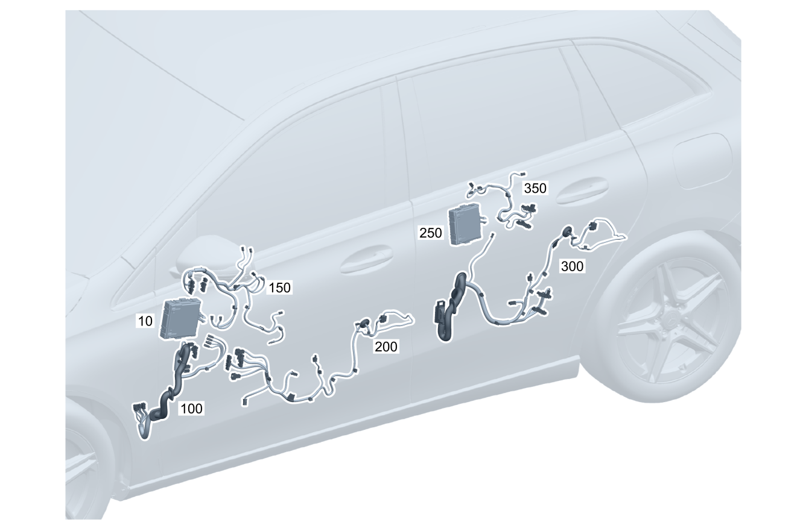

| № | Артикул | Название | Кол. | Примечание | Ограничение |
|---|---|---|---|---|---|
| 10 | A 177 900 36 06 | Блок управления (CONTROL UNIT) | 1 | Блок управления двери спереди слева [672] ДЕТАЛЬ ПОСЛЕ УСТАН.ПРОВЕРИТЬ НА АКТУАЛЬНОСТЬ "ПРОШИВНОГО" ПО | |
| 10 | A 177 900 36 06 | Блок управления (CONTROL UNIT) | 1 | Блок управления двери спереди слева [672] ДЕТАЛЬ ПОСЛЕ УСТАН.ПРОВЕРИТЬ НА АКТУАЛЬНОСТЬ "ПРОШИВНОГО" ПО | |
| 10 | A 177 900 36 06 | Блок управления (CONTROL UNIT) | 1 | Блок управления двери спереди слева [672] ДЕТАЛЬ ПОСЛЕ УСТАН.ПРОВЕРИТЬ НА АКТУАЛЬНОСТЬ "ПРОШИВНОГО" ПО | |
| 10 | A 177 900 37 06 | Блок управления (CONTROL UNIT) | 1 | Блок управления двери спереди слева [672] ДЕТАЛЬ ПОСЛЕ УСТАН.ПРОВЕРИТЬ НА АКТУАЛЬНОСТЬ "ПРОШИВНОГО" ПО [697] ДЕТАЛЬ ПОСТАВЛЯЕТСЯ ТОЛЬКО/ИЛИ ТАКЖЕ КАК ЗАП.ЧАСТЬ | 249/275/401/500/873/U62 |
| 10 | A 177 900 37 06 | Блок управления (CONTROL UNIT) | 1 | Блок управления двери спереди слева [672] ДЕТАЛЬ ПОСЛЕ УСТАН.ПРОВЕРИТЬ НА АКТУАЛЬНОСТЬ "ПРОШИВНОГО" ПО [697] ДЕТАЛЬ ПОСТАВЛЯЕТСЯ ТОЛЬКО/ИЛИ ТАКЖЕ КАК ЗАП.ЧАСТЬ | 249/275/401/500/873/U62 |
| 10 | A 177 900 37 06 | Блок управления (CONTROL UNIT) | 1 | Блок управления двери спереди слева [672] ДЕТАЛЬ ПОСЛЕ УСТАН.ПРОВЕРИТЬ НА АКТУАЛЬНОСТЬ "ПРОШИВНОГО" ПО [697] ДЕТАЛЬ ПОСТАВЛЯЕТСЯ ТОЛЬКО/ИЛИ ТАКЖЕ КАК ЗАП.ЧАСТЬ | 249/275/401/500/873/U62 |
| 10 | A 177 900 38 06 | Блок управления (CONTROL UNIT) | 1 | Блок управления двери спереди слева [672] ДЕТАЛЬ ПОСЛЕ УСТАН.ПРОВЕРИТЬ НА АКТУАЛЬНОСТЬ "ПРОШИВНОГО" ПО [697] ДЕТАЛЬ ПОСТАВЛЯЕТСЯ ТОЛЬКО/ИЛИ ТАКЖЕ КАК ЗАП.ЧАСТЬ | 233/234/877/885/ME08/ME10/(233/234/877/885/ME08/ME10)+(249/275/401/500/873/U62) |
| 10 | A 177 900 38 06 | Блок управления (CONTROL UNIT) | 1 | Блок управления двери спереди слева [672] ДЕТАЛЬ ПОСЛЕ УСТАН.ПРОВЕРИТЬ НА АКТУАЛЬНОСТЬ "ПРОШИВНОГО" ПО [697] ДЕТАЛЬ ПОСТАВЛЯЕТСЯ ТОЛЬКО/ИЛИ ТАКЖЕ КАК ЗАП.ЧАСТЬ | 233/234/877/885/ME08/ME10/(233/234/877/885/ME08/ME10)+(249/275/401/500/873/U62) |
| 10 | A 177 900 38 06 | Блок управления (CONTROL UNIT) | 1 | Блок управления двери спереди слева [672] ДЕТАЛЬ ПОСЛЕ УСТАН.ПРОВЕРИТЬ НА АКТУАЛЬНОСТЬ "ПРОШИВНОГО" ПО [697] ДЕТАЛЬ ПОСТАВЛЯЕТСЯ ТОЛЬКО/ИЛИ ТАКЖЕ КАК ЗАП.ЧАСТЬ | 233/234/877/885/ME08/ME10/(233/234/877/885/ME08/ME10)+(249/275/401/500/873/U62) |
| 10 | A 177 900 16 07 | Блок управления | 1 | Блок управления двери спереди слева [672] ДЕТАЛЬ ПОСЛЕ УСТАН.ПРОВЕРИТЬ НА АКТУАЛЬНОСТЬ "ПРОШИВНОГО" ПО | 802/136 |
| 10 | A 177 900 16 07 | Блок управления | 1 | Блок управления двери спереди слева [672] ДЕТАЛЬ ПОСЛЕ УСТАН.ПРОВЕРИТЬ НА АКТУАЛЬНОСТЬ "ПРОШИВНОГО" ПО | |
| 10 | A 177 900 49 09 | Блок управления (CONTROL UNIT) | 1 | Блок управления двери спереди слева [672] ДЕТАЛЬ ПОСЛЕ УСТАН.ПРОВЕРИТЬ НА АКТУАЛЬНОСТЬ "ПРОШИВНОГО" ПО | |
| 10 | A 177 900 79 11 | Блок управления (CONTROL UNIT) | 1 | Блок управления двери спереди слева [672] ДЕТАЛЬ ПОСЛЕ УСТАН.ПРОВЕРИТЬ НА АКТУАЛЬНОСТЬ "ПРОШИВНОГО" ПО | |
| 10 | A 177 900 71 16 | Блок управления (CONTROL UNIT) | 1 | Блок управления двери спереди слева [672] ДЕТАЛЬ ПОСЛЕ УСТАН.ПРОВЕРИТЬ НА АКТУАЛЬНОСТЬ "ПРОШИВНОГО" ПО | |
| 10 | A 177 900 17 07 | Блок управления (CONTROL UNIT) | 1 | Блок управления двери спереди слева [672] ДЕТАЛЬ ПОСЛЕ УСТАН.ПРОВЕРИТЬ НА АКТУАЛЬНОСТЬ "ПРОШИВНОГО" ПО [697] ДЕТАЛЬ ПОСТАВЛЯЕТСЯ ТОЛЬКО/ИЛИ ТАКЖЕ КАК ЗАП.ЧАСТЬ | (802/136)+(249/275/401/500/873/U62) |
| 10 | A 177 900 17 07 | Блок управления (CONTROL UNIT) | 1 | Блок управления двери спереди слева [672] ДЕТАЛЬ ПОСЛЕ УСТАН.ПРОВЕРИТЬ НА АКТУАЛЬНОСТЬ "ПРОШИВНОГО" ПО [697] ДЕТАЛЬ ПОСТАВЛЯЕТСЯ ТОЛЬКО/ИЛИ ТАКЖЕ КАК ЗАП.ЧАСТЬ | 249/275/401/500/873/U62 |
| 10 | A 177 900 50 09 | Блок управления (CONTROL UNIT) | 1 | Блок управления двери спереди слева [672] ДЕТАЛЬ ПОСЛЕ УСТАН.ПРОВЕРИТЬ НА АКТУАЛЬНОСТЬ "ПРОШИВНОГО" ПО [697] ДЕТАЛЬ ПОСТАВЛЯЕТСЯ ТОЛЬКО/ИЛИ ТАКЖЕ КАК ЗАП.ЧАСТЬ | 249/275/401/500/873/U62 |
| 10 | A 177 900 69 14 | Блок управления | 1 | Блок управления двери спереди слева [672] ДЕТАЛЬ ПОСЛЕ УСТАН.ПРОВЕРИТЬ НА АКТУАЛЬНОСТЬ "ПРОШИВНОГО" ПО | 249/275/401/500/873/U62 |
| 10 | A 177 900 82 15 | Блок управления (CONTROL UNIT) | 1 | Блок управления двери спереди слева [672] ДЕТАЛЬ ПОСЛЕ УСТАН.ПРОВЕРИТЬ НА АКТУАЛЬНОСТЬ "ПРОШИВНОГО" ПО | 249/275/401/500/873/U62 |
| 10 | A 177 900 72 16 | Блок управления (CONTROL UNIT) | 1 | Блок управления двери спереди слева [672] ДЕТАЛЬ ПОСЛЕ УСТАН.ПРОВЕРИТЬ НА АКТУАЛЬНОСТЬ "ПРОШИВНОГО" ПО | 249/275/401/500/873/U62 |
| 10 | A 177 900 18 07 | Блок управления (CONTROL UNIT) | 1 | Блок управления двери спереди слева [672] ДЕТАЛЬ ПОСЛЕ УСТАН.ПРОВЕРИТЬ НА АКТУАЛЬНОСТЬ "ПРОШИВНОГО" ПО [697] ДЕТАЛЬ ПОСТАВЛЯЕТСЯ ТОЛЬКО/ИЛИ ТАКЖЕ КАК ЗАП.ЧАСТЬ | (802/136)+(233/234/877/885/ME08/ME10/(233/234/877/885/ME08/ME10)+(249/275/401/500/873/U62)) |
| 10 | A 177 900 18 07 | Блок управления (CONTROL UNIT) | 1 | Блок управления двери спереди слева [672] ДЕТАЛЬ ПОСЛЕ УСТАН.ПРОВЕРИТЬ НА АКТУАЛЬНОСТЬ "ПРОШИВНОГО" ПО [697] ДЕТАЛЬ ПОСТАВЛЯЕТСЯ ТОЛЬКО/ИЛИ ТАКЖЕ КАК ЗАП.ЧАСТЬ | (233/234/877/885/ME08/ME10/(233/234/877/885/ME08/ME10)+(249/275/401/500/873/U62)) |
| 10 | A 177 900 51 09 | Блок управления (CONTROL UNIT) | 1 | Блок управления двери спереди слева [672] ДЕТАЛЬ ПОСЛЕ УСТАН.ПРОВЕРИТЬ НА АКТУАЛЬНОСТЬ "ПРОШИВНОГО" ПО [697] ДЕТАЛЬ ПОСТАВЛЯЕТСЯ ТОЛЬКО/ИЛИ ТАКЖЕ КАК ЗАП.ЧАСТЬ | (233/234/877/885/ME08/ME10/(233/234/877/885/ME08/ME10)+(249/275/401/500/873/U62)) |
| 10 | A 177 900 81 11 | Блок управления | 1 | Блок управления двери спереди слева [672] ДЕТАЛЬ ПОСЛЕ УСТАН.ПРОВЕРИТЬ НА АКТУАЛЬНОСТЬ "ПРОШИВНОГО" ПО | (233/234/877/885/ME08/ME10/(233/234/877/885/ME08/ME10)+(249/275/401/500/873/U62)) |
| 10 | A 177 900 84 15 | Блок управления (CONTROL UNIT) | 1 | Блок управления двери спереди слева [672] ДЕТАЛЬ ПОСЛЕ УСТАН.ПРОВЕРИТЬ НА АКТУАЛЬНОСТЬ "ПРОШИВНОГО" ПО | (233/234/877/885/ME08/ME10/(233/234/877/885/ME08/ME10)+(249/275/401/500/873/U62)) |
| 10 | A 177 900 73 16 | Блок управления (CONTROL UNIT) | 1 | Блок управления двери спереди слева [672] ДЕТАЛЬ ПОСЛЕ УСТАН.ПРОВЕРИТЬ НА АКТУАЛЬНОСТЬ "ПРОШИВНОГО" ПО | 233/234/877/885/ME10/(233/234/877/885/ME10)+(249/275/401/500/873/U62) |
| 10 | A 177 900 73 16 | Блок управления (CONTROL UNIT) | 1 | Блок управления двери спереди слева [672] ДЕТАЛЬ ПОСЛЕ УСТАН.ПРОВЕРИТЬ НА АКТУАЛЬНОСТЬ "ПРОШИВНОГО" ПО | 234/877/885/ME10/(234/877/885/ME10)+(249/275/401/500/873/U62) |
| 10 | A 177 900 39 06 | Блок управления (CONTROL UNIT) | 1 | Блок управления двери спереди справа [672] ДЕТАЛЬ ПОСЛЕ УСТАН.ПРОВЕРИТЬ НА АКТУАЛЬНОСТЬ "ПРОШИВНОГО" ПО | |
| 10 | A 177 900 39 06 | Блок управления (CONTROL UNIT) | 1 | Блок управления двери спереди справа [672] ДЕТАЛЬ ПОСЛЕ УСТАН.ПРОВЕРИТЬ НА АКТУАЛЬНОСТЬ "ПРОШИВНОГО" ПО | |
| 10 | A 177 900 39 06 | Блок управления (CONTROL UNIT) | 1 | Блок управления двери спереди справа [672] ДЕТАЛЬ ПОСЛЕ УСТАН.ПРОВЕРИТЬ НА АКТУАЛЬНОСТЬ "ПРОШИВНОГО" ПО | |
| 10 | A 177 900 40 06 | Блок управления (CONTROL UNIT) | 1 | Блок управления двери спереди справа [672] ДЕТАЛЬ ПОСЛЕ УСТАН.ПРОВЕРИТЬ НА АКТУАЛЬНОСТЬ "ПРОШИВНОГО" ПО [697] ДЕТАЛЬ ПОСТАВЛЯЕТСЯ ТОЛЬКО/ИЛИ ТАКЖЕ КАК ЗАП.ЧАСТЬ | 249/275/401/500/873/U62 |
| 10 | A 177 900 40 06 | Блок управления (CONTROL UNIT) | 1 | Блок управления двери спереди справа [672] ДЕТАЛЬ ПОСЛЕ УСТАН.ПРОВЕРИТЬ НА АКТУАЛЬНОСТЬ "ПРОШИВНОГО" ПО [697] ДЕТАЛЬ ПОСТАВЛЯЕТСЯ ТОЛЬКО/ИЛИ ТАКЖЕ КАК ЗАП.ЧАСТЬ | 249/275/401/500/873/U62 |
| 10 | A 177 900 40 06 | Блок управления (CONTROL UNIT) | 1 | Блок управления двери спереди справа [672] ДЕТАЛЬ ПОСЛЕ УСТАН.ПРОВЕРИТЬ НА АКТУАЛЬНОСТЬ "ПРОШИВНОГО" ПО [697] ДЕТАЛЬ ПОСТАВЛЯЕТСЯ ТОЛЬКО/ИЛИ ТАКЖЕ КАК ЗАП.ЧАСТЬ | 249/275/401/500/873/U62 |
| 10 | A 177 900 41 06 | Блок управления (CONTROL UNIT) | 1 | Блок управления двери спереди справа [672] ДЕТАЛЬ ПОСЛЕ УСТАН.ПРОВЕРИТЬ НА АКТУАЛЬНОСТЬ "ПРОШИВНОГО" ПО [697] ДЕТАЛЬ ПОСТАВЛЯЕТСЯ ТОЛЬКО/ИЛИ ТАКЖЕ КАК ЗАП.ЧАСТЬ | 233/234/877/885/ME08/ME10/(233/234/877/885/ME08/ME10)+(249/275/401/500/873/U62) |
| 10 | A 177 900 41 06 | Блок управления (CONTROL UNIT) | 1 | Блок управления двери спереди справа [672] ДЕТАЛЬ ПОСЛЕ УСТАН.ПРОВЕРИТЬ НА АКТУАЛЬНОСТЬ "ПРОШИВНОГО" ПО [697] ДЕТАЛЬ ПОСТАВЛЯЕТСЯ ТОЛЬКО/ИЛИ ТАКЖЕ КАК ЗАП.ЧАСТЬ | 233/234/877/885/ME08/ME10/(233/234/877/885/ME08/ME10)+(249/275/401/500/873/U62) |
| 10 | A 177 900 41 06 | Блок управления (CONTROL UNIT) | 1 | Блок управления двери спереди справа [672] ДЕТАЛЬ ПОСЛЕ УСТАН.ПРОВЕРИТЬ НА АКТУАЛЬНОСТЬ "ПРОШИВНОГО" ПО [697] ДЕТАЛЬ ПОСТАВЛЯЕТСЯ ТОЛЬКО/ИЛИ ТАКЖЕ КАК ЗАП.ЧАСТЬ | 233/234/877/885/ME08/ME10/(233/234/877/885/ME08/ME10)+(249/275/401/500/873/U62) |
| 10 | A 177 900 19 07 | Блок управления (CONTROL UNIT) | 1 | Блок управления двери спереди справа [672] ДЕТАЛЬ ПОСЛЕ УСТАН.ПРОВЕРИТЬ НА АКТУАЛЬНОСТЬ "ПРОШИВНОГО" ПО | 802/136 |
| 10 | A 177 900 19 07 | Блок управления (CONTROL UNIT) | 1 | Блок управления двери спереди справа [672] ДЕТАЛЬ ПОСЛЕ УСТАН.ПРОВЕРИТЬ НА АКТУАЛЬНОСТЬ "ПРОШИВНОГО" ПО | |
| 10 | A 177 900 52 09 | Блок управления (CONTROL UNIT) | 1 | Блок управления двери спереди справа [672] ДЕТАЛЬ ПОСЛЕ УСТАН.ПРОВЕРИТЬ НА АКТУАЛЬНОСТЬ "ПРОШИВНОГО" ПО | |
| 10 | A 177 900 82 11 | Блок управления (CONTROL UNIT) | 1 | Блок управления двери спереди справа [672] ДЕТАЛЬ ПОСЛЕ УСТАН.ПРОВЕРИТЬ НА АКТУАЛЬНОСТЬ "ПРОШИВНОГО" ПО | |
| 10 | A 177 900 74 16 | Блок управления (CONTROL UNIT) | 1 | Блок управления двери спереди справа [672] ДЕТАЛЬ ПОСЛЕ УСТАН.ПРОВЕРИТЬ НА АКТУАЛЬНОСТЬ "ПРОШИВНОГО" ПО | |
| 10 | A 177 900 20 07 | Блок управления (CONTROL UNIT) | 1 | Блок управления двери спереди справа [672] ДЕТАЛЬ ПОСЛЕ УСТАН.ПРОВЕРИТЬ НА АКТУАЛЬНОСТЬ "ПРОШИВНОГО" ПО [697] ДЕТАЛЬ ПОСТАВЛЯЕТСЯ ТОЛЬКО/ИЛИ ТАКЖЕ КАК ЗАП.ЧАСТЬ | (802/136)+(249/275/401/500/873/U62) |
| 10 | A 177 900 20 07 | Блок управления (CONTROL UNIT) | 1 | Блок управления двери спереди справа [672] ДЕТАЛЬ ПОСЛЕ УСТАН.ПРОВЕРИТЬ НА АКТУАЛЬНОСТЬ "ПРОШИВНОГО" ПО [697] ДЕТАЛЬ ПОСТАВЛЯЕТСЯ ТОЛЬКО/ИЛИ ТАКЖЕ КАК ЗАП.ЧАСТЬ | 249/275/401/500/873/U62 |
| 10 | A 177 900 53 09 | Блок управления (CONTROL UNIT) | 1 | Блок управления двери спереди справа [672] ДЕТАЛЬ ПОСЛЕ УСТАН.ПРОВЕРИТЬ НА АКТУАЛЬНОСТЬ "ПРОШИВНОГО" ПО [697] ДЕТАЛЬ ПОСТАВЛЯЕТСЯ ТОЛЬКО/ИЛИ ТАКЖЕ КАК ЗАП.ЧАСТЬ | 249/275/401/500/873/U62 |
| 10 | A 177 900 70 14 | Блок управления (CONTROL UNIT) | 1 | Блок управления двери спереди справа [672] ДЕТАЛЬ ПОСЛЕ УСТАН.ПРОВЕРИТЬ НА АКТУАЛЬНОСТЬ "ПРОШИВНОГО" ПО | 249/275/401/500/873/U62 |
| 10 | A 177 900 83 15 | Блок управления (CONTROL UNIT) | 1 | Блок управления двери спереди справа [672] ДЕТАЛЬ ПОСЛЕ УСТАН.ПРОВЕРИТЬ НА АКТУАЛЬНОСТЬ "ПРОШИВНОГО" ПО | 249/275/401/500/873/U62 |
| 10 | A 177 900 75 16 | Блок управления (CONTROL UNIT) | 1 | Блок управления двери спереди справа [672] ДЕТАЛЬ ПОСЛЕ УСТАН.ПРОВЕРИТЬ НА АКТУАЛЬНОСТЬ "ПРОШИВНОГО" ПО | 249/275/401/500/873/U62 |
| 10 | A 177 900 21 07 | Блок управления (CONTROL UNIT) | 1 | Блок управления двери спереди справа [672] ДЕТАЛЬ ПОСЛЕ УСТАН.ПРОВЕРИТЬ НА АКТУАЛЬНОСТЬ "ПРОШИВНОГО" ПО [697] ДЕТАЛЬ ПОСТАВЛЯЕТСЯ ТОЛЬКО/ИЛИ ТАКЖЕ КАК ЗАП.ЧАСТЬ | (802/136)+(233/234/877/885/ME08/ME10/(233/234/877/885/ME08/ME10)+(249/275/401/500/873/U62)) |
| 10 | A 177 900 21 07 | Блок управления (CONTROL UNIT) | 1 | Блок управления двери спереди справа [672] ДЕТАЛЬ ПОСЛЕ УСТАН.ПРОВЕРИТЬ НА АКТУАЛЬНОСТЬ "ПРОШИВНОГО" ПО [697] ДЕТАЛЬ ПОСТАВЛЯЕТСЯ ТОЛЬКО/ИЛИ ТАКЖЕ КАК ЗАП.ЧАСТЬ | (233/234/877/885/ME08/ME10/(233/234/877/885/ME08/ME10)+(249/275/401/500/873/U62)) |
| 10 | A 177 900 54 09 | Блок управления (CONTROL UNIT) | 1 | Блок управления двери спереди справа [672] ДЕТАЛЬ ПОСЛЕ УСТАН.ПРОВЕРИТЬ НА АКТУАЛЬНОСТЬ "ПРОШИВНОГО" ПО [697] ДЕТАЛЬ ПОСТАВЛЯЕТСЯ ТОЛЬКО/ИЛИ ТАКЖЕ КАК ЗАП.ЧАСТЬ | (233/234/877/885/ME08/ME10/(233/234/877/885/ME08/ME10)+(249/275/401/500/873/U62)) |
| 10 | A 177 900 84 11 | Блок управления | 1 | Блок управления двери спереди справа [672] ДЕТАЛЬ ПОСЛЕ УСТАН.ПРОВЕРИТЬ НА АКТУАЛЬНОСТЬ "ПРОШИВНОГО" ПО [697] ДЕТАЛЬ ПОСТАВЛЯЕТСЯ ТОЛЬКО/ИЛИ ТАКЖЕ КАК ЗАП.ЧАСТЬ | (233/234/877/885/ME08/ME10/(233/234/877/885/ME08/ME10)+(249/275/401/500/873/U62)) |
| 10 | A 177 900 85 15 | Блок управления (CONTROL UNIT) | 1 | Блок управления двери спереди справа [672] ДЕТАЛЬ ПОСЛЕ УСТАН.ПРОВЕРИТЬ НА АКТУАЛЬНОСТЬ "ПРОШИВНОГО" ПО [697] ДЕТАЛЬ ПОСТАВЛЯЕТСЯ ТОЛЬКО/ИЛИ ТАКЖЕ КАК ЗАП.ЧАСТЬ | (233/234/877/885/ME08/ME10/(233/234/877/885/ME08/ME10)+(249/275/401/500/873/U62)) |
| 10 | A 177 900 76 16 | Блок управления (CONTROL UNIT) | 1 | Блок управления двери спереди справа [672] ДЕТАЛЬ ПОСЛЕ УСТАН.ПРОВЕРИТЬ НА АКТУАЛЬНОСТЬ "ПРОШИВНОГО" ПО | 233/234/877/885/ME10/(233/234/877/885/ME10)+(249/275/401/500/873/U62) |
| 10 | A 177 900 76 16 | Блок управления (CONTROL UNIT) | 1 | Блок управления двери спереди справа [672] ДЕТАЛЬ ПОСЛЕ УСТАН.ПРОВЕРИТЬ НА АКТУАЛЬНОСТЬ "ПРОШИВНОГО" ПО | 234/877/885/ME10/(234/877/885/ME10)+(249/275/401/500/873/U62) |
| 100 | A 177 540 80 12 | Электрический жгут (ELECTRICAL WIRING HARNESS) | 1 | Дверь спереди слева, разъем двери к блоку управления и потребителю | |
| 100 | A 177 540 80 12 | Электрический жгут (ELECTRICAL WIRING HARNESS) | 1 | Дверь спереди слева, разъем двери к блоку управления и потребителю | |
| 100 | A 177 540 86 12 | Электрический жгут (ELECTRICAL WIRING HARNESS) | 1 | Дверь спереди слева, разъем двери к блоку управления и потребителю Рулевое управление: Вправо | 270 |
| 100 | A 177 540 84 12 | Электрический жгут (ELECTRICAL WIRING HARNESS) | 1 | Дверь спереди слева, разъем двери к блоку управления и потребителю | 899/B24/344 |
| 100 | A 177 540 84 12 | Электрический жгут (ELECTRICAL WIRING HARNESS) | 1 | Дверь спереди слева, разъем двери к блоку управления и потребителю | 899/B24/344 |
| 100 | A 177 540 84 12 | Электрический жгут (ELECTRICAL WIRING HARNESS) | 1 | Дверь спереди слева, разъем двери к блоку управления и потребителю | 899/344 |
| 100 | A 177 540 84 12 | Электрический жгут (ELECTRICAL WIRING HARNESS) | 1 | Дверь спереди слева, разъем двери к блоку управления и потребителю | 344 |
| 100 | A 177 540 85 12 | Электрический жгут (ELECTRICAL WIRING HARNESS) | 1 | Дверь спереди слева, разъем двери к блоку управления и потребителю | 501 |
| 100 | A 177 540 82 12 | Электрический жгут (ELECTRICAL WIRING HARNESS) | 1 | Дверь спереди слева, разъем двери к блоку управления и потребителю | 877 |
| 100 | A 177 540 83 12 | Электрический жгут (ELECTRICAL WIRING HARNESS) | 1 | Дверь спереди слева, разъем двери к блоку управления и потребителю Рулевое управление: Влево | 426/429 |
| 100 | A 177 540 83 20 | Электрический жгут (ELECTRICAL WIRING HARNESS) | 1 | Дверь спереди слева, разъем двери к блоку управления и потребителю Рулевое управление: Вправо | (899/B24)+270 |
| 100 | A 177 540 83 20 | Электрический жгут (ELECTRICAL WIRING HARNESS) | 1 | Дверь спереди слева, разъем двери к блоку управления и потребителю Рулевое управление: Вправо | 899+270 |
| 100 | A 177 540 72 20 | Электрический жгут (ELECTRICAL WIRING HARNESS) | 1 | Дверь спереди слева, разъем двери к блоку управления и потребителю | (899/B24/344)+501 |
| 100 | A 177 540 72 20 | Электрический жгут (ELECTRICAL WIRING HARNESS) | 1 | Дверь спереди слева, разъем двери к блоку управления и потребителю | (899/B24/344)+501 |
| 100 | A 177 540 72 20 | Электрический жгут (ELECTRICAL WIRING HARNESS) | 1 | Дверь спереди слева, разъем двери к блоку управления и потребителю | (899/344)+501 |
| 100 | A 177 540 72 20 | Электрический жгут (ELECTRICAL WIRING HARNESS) | 1 | Дверь спереди слева, разъем двери к блоку управления и потребителю | 344+501 |
| 100 | A 177 540 59 20 | Электрический жгут (ELECTRICAL WIRING HARNESS) | 1 | Дверь спереди слева, разъем двери к блоку управления и потребителю Рулевое управление: Влево | (899/B24/344)+(426/429) |
| 100 | A 177 540 59 20 | Электрический жгут (ELECTRICAL WIRING HARNESS) | 1 | Дверь спереди слева, разъем двери к блоку управления и потребителю Рулевое управление: Влево | (899/B24/344)+(426/429) |
| 100 | A 177 540 59 20 | Электрический жгут (ELECTRICAL WIRING HARNESS) | 1 | Дверь спереди слева, разъем двери к блоку управления и потребителю Рулевое управление: Влево | (899/344)+(426/429) |
| 100 | A 177 540 59 20 | Электрический жгут (ELECTRICAL WIRING HARNESS) | 1 | Дверь спереди слева, разъем двери к блоку управления и потребителю Рулевое управление: Влево | 344+(426/429) |
| 100 | A 177 540 91 20 | Электрический жгут (ELECTRICAL WIRING HARNESS) | 1 | Дверь спереди слева, разъем двери к блоку управления и потребителю Рулевое управление: Вправо | (899/B24)+270+501 |
| 100 | A 177 540 91 20 | Электрический жгут (ELECTRICAL WIRING HARNESS) | 1 | Дверь спереди слева, разъем двери к блоку управления и потребителю Рулевое управление: Вправо | 899+270+501 |
| 100 | A 177 540 76 20 | Электрический жгут (ELECTRICAL WIRING HARNESS) | 1 | Дверь спереди слева, разъем двери к блоку управления и потребителю Рулевое управление: Влево | (899/B24/344)+(426/429)+501 |
| 100 | A 177 540 76 20 | Электрический жгут (ELECTRICAL WIRING HARNESS) | 1 | Дверь спереди слева, разъем двери к блоку управления и потребителю Рулевое управление: Влево | (899/B24/344)+(426/429)+501 |
| 100 | A 177 540 76 20 | Электрический жгут (ELECTRICAL WIRING HARNESS) | 1 | Дверь спереди слева, разъем двери к блоку управления и потребителю Рулевое управление: Влево | (899/344)+(426/429)+501 |
| 100 | A 177 540 76 20 | Электрический жгут (ELECTRICAL WIRING HARNESS) | 1 | Дверь спереди слева, разъем двери к блоку управления и потребителю Рулевое управление: Влево | 344+(426/429)+501 |
| 100 | A 177 540 87 20 | Электрический жгут (ELECTRICAL WIRING HARNESS) | 1 | Дверь спереди слева, разъем двери к блоку управления и потребителю Рулевое управление: Вправо | 501+270 |
| 100 | A 177 540 68 20 | Электрический жгут (ELECTRICAL WIRING HARNESS) | 1 | Дверь спереди слева, разъем двери к блоку управления и потребителю Рулевое управление: Влево | 501+(426/429) |
| 100 | A 177 540 81 20 | Электрический жгут (ELECTRICAL WIRING HARNESS) | 1 | Дверь спереди слева, разъем двери к блоку управления и потребителю Рулевое управление: Вправо | 877+270 |
| 100 | A 177 540 57 20 | Электрический жгут (ELECTRICAL WIRING HARNESS) | 1 | Дверь спереди слева, разъем двери к блоку управления и потребителю | 877+(899/B24/344) |
| 100 | A 177 540 57 20 | Электрический жгут (ELECTRICAL WIRING HARNESS) | 1 | Дверь спереди слева, разъем двери к блоку управления и потребителю | 877+(899/B24/344) |
| 100 | A 177 540 57 20 | Электрический жгут (ELECTRICAL WIRING HARNESS) | 1 | Дверь спереди слева, разъем двери к блоку управления и потребителю | 877+(899/344) |
| 100 | A 177 540 57 20 | Электрический жгут (ELECTRICAL WIRING HARNESS) | 1 | Дверь спереди слева, разъем двери к блоку управления и потребителю | 877+344 |
| 100 | A 177 540 66 20 | Электрический жгут (ELECTRICAL WIRING HARNESS) | 1 | Дверь спереди слева, разъем двери к блоку управления и потребителю | 877+501 |
| 100 | A 177 540 54 20 | Электрический жгут (ELECTRICAL WIRING HARNESS) | 1 | Дверь спереди слева, разъем двери к блоку управления и потребителю Рулевое управление: Влево | 877+(426/429) |
| 100 | A 177 540 85 20 | Электрический жгут (ELECTRICAL WIRING HARNESS) | 1 | Дверь спереди слева, разъем двери к блоку управления и потребителю Рулевое управление: Вправо | 877+270+(899/B24) |
| 100 | A 177 540 85 20 | Электрический жгут (ELECTRICAL WIRING HARNESS) | 1 | Дверь спереди слева, разъем двери к блоку управления и потребителю Рулевое управление: Вправо | 877+270+899 |
| 100 | A 177 540 74 20 | Электрический жгут (ELECTRICAL WIRING HARNESS) | 1 | Дверь спереди слева, разъем двери к блоку управления и потребителю | 877+(899/B24/344)+501 |
| 100 | A 177 540 74 20 | Электрический жгут (ELECTRICAL WIRING HARNESS) | 1 | Дверь спереди слева, разъем двери к блоку управления и потребителю | 877+(899/B24/344)+501 |
| 100 | A 177 540 74 20 | Электрический жгут (ELECTRICAL WIRING HARNESS) | 1 | Дверь спереди слева, разъем двери к блоку управления и потребителю | 877+(899/344)+501 |
| 100 | A 177 540 74 20 | Электрический жгут (ELECTRICAL WIRING HARNESS) | 1 | Дверь спереди слева, разъем двери к блоку управления и потребителю | 877+344+501 |
| 100 | A 177 540 89 20 | Электрический жгут (ELECTRICAL WIRING HARNESS) | 1 | Дверь спереди слева, разъем двери к блоку управления и потребителю Рулевое управление: Вправо | 877+270+501 |
| 100 | A 177 540 93 20 | Электрический жгут (ELECTRICAL WIRING HARNESS) | 1 | Дверь спереди слева, разъем двери к блоку управления и потребителю Рулевое управление: Вправо | 877+(899/B24)+501+270 |
| 100 | A 177 540 93 20 | Электрический жгут (ELECTRICAL WIRING HARNESS) | 1 | Дверь спереди слева, разъем двери к блоку управления и потребителю Рулевое управление: Вправо | 877+899+501+270 |
| 100 | A 177 540 70 20 | Электрический жгут (ELECTRICAL WIRING HARNESS) | 1 | Дверь спереди слева, разъем двери к блоку управления и потребителю Рулевое управление: Влево | 877+(426/429)+501 |
| 100 | A 177 540 78 20 | Электрический жгут (ELECTRICAL WIRING HARNESS) | 1 | Дверь спереди слева, разъем двери к блоку управления и потребителю Рулевое управление: Влево | 877+(426/429)+(899/B24/344)+501 |
| 100 | A 177 540 78 20 | Электрический жгут (ELECTRICAL WIRING HARNESS) | 1 | Дверь спереди слева, разъем двери к блоку управления и потребителю Рулевое управление: Влево | 877+(426/429)+(899/B24/344)+501 |
| 100 | A 177 540 78 20 | Электрический жгут (ELECTRICAL WIRING HARNESS) | 1 | Дверь спереди слева, разъем двери к блоку управления и потребителю Рулевое управление: Влево | 877+(426/429)+(899/344)+501 |
| 100 | A 177 540 78 20 | Электрический жгут (ELECTRICAL WIRING HARNESS) | 1 | Дверь спереди слева, разъем двери к блоку управления и потребителю Рулевое управление: Влево | 877+(426/429)+344+501 |
| 100 | A 177 540 61 20 | Электрический жгут (ELECTRICAL WIRING HARNESS) | 1 | Дверь спереди слева, разъем двери к блоку управления и потребителю Рулевое управление: Влево | 877+(426/429)+(899/B24/344) |
| 100 | A 177 540 61 20 | Электрический жгут (ELECTRICAL WIRING HARNESS) | 1 | Дверь спереди слева, разъем двери к блоку управления и потребителю Рулевое управление: Влево | 877+(426/429)+(899/B24/344) |
| 100 | A 177 540 61 20 | Электрический жгут (ELECTRICAL WIRING HARNESS) | 1 | Дверь спереди слева, разъем двери к блоку управления и потребителю Рулевое управление: Влево | 877+(426/429)+(899/344) |
| 100 | A 177 540 61 20 | Электрический жгут (ELECTRICAL WIRING HARNESS) | 1 | Дверь спереди слева, разъем двери к блоку управления и потребителю Рулевое управление: Влево | 877+(426/429)+344 |
| 100 | A 177 540 83 12 | Электрический жгут (ELECTRICAL WIRING HARNESS) | 1 | Дверь спереди слева, разъем двери к блоку управления и потребителю Рулевое управление: Влево | (804/804+054/805) |
| 100 | A 177 540 83 12 | Электрический жгут (ELECTRICAL WIRING HARNESS) | 1 | Дверь спереди слева, разъем двери к блоку управления и потребителю Рулевое управление: Влево | |
| 100 | A 177 540 86 12 | Электрический жгут (ELECTRICAL WIRING HARNESS) | 1 | Дверь спереди слева, разъем двери к блоку управления и потребителю Рулевое управление: Вправо | (804/804+054/805)+270 |
| 100 | A 177 540 86 12 | Электрический жгут (ELECTRICAL WIRING HARNESS) | 1 | Дверь спереди слева, разъем двери к блоку управления и потребителю Рулевое управление: Вправо | 270 |
| 100 | A 177 540 44 41 | Электрический жгут (ELECTRICAL WIRING HARNESS) | 1 | Дверь спереди слева, разъем двери к блоку управления и потребителю Рулевое управление: Влево | (804/804+054/805)+501 |
| 100 | A 177 540 44 41 | Электрический жгут (ELECTRICAL WIRING HARNESS) | 1 | Дверь спереди слева, разъем двери к блоку управления и потребителю Рулевое управление: Влево | 501 |
| 100 | A 177 540 54 20 | Электрический жгут (ELECTRICAL WIRING HARNESS) | 1 | Дверь спереди слева, разъем двери к блоку управления и потребителю Рулевое управление: Влево | (804/804+054/805)+877 |
| 100 | A 177 540 54 20 | Электрический жгут (ELECTRICAL WIRING HARNESS) | 1 | Дверь спереди слева, разъем двери к блоку управления и потребителю Рулевое управление: Влево | 877 |
| 100 | A 177 540 56 41 | Электрический жгут (ELECTRICAL WIRING HARNESS) | 1 | Дверь спереди слева, разъем двери к блоку управления и потребителю Рулевое управление: Вправо | (804/804+054/805)+270+501 |
| 100 | A 177 540 56 41 | Электрический жгут (ELECTRICAL WIRING HARNESS) | 1 | Дверь спереди слева, разъем двери к блоку управления и потребителю Рулевое управление: Вправо | 270+501 |
| 100 | A 177 540 81 20 | Электрический жгут (ELECTRICAL WIRING HARNESS) | 1 | Дверь спереди слева, разъем двери к блоку управления и потребителю Рулевое управление: Вправо | (804/804+054/805)+270+877 |
| 100 | A 177 540 81 20 | Электрический жгут (ELECTRICAL WIRING HARNESS) | 1 | Дверь спереди слева, разъем двери к блоку управления и потребителю Рулевое управление: Вправо | 270+877 |
| 100 | A 177 540 46 41 | Электрический жгут (ELECTRICAL WIRING HARNESS) | 1 | Дверь спереди слева, разъем двери к блоку управления и потребителю Рулевое управление: Влево | (804/804+054/805)+877+501 |
| 100 | A 177 540 46 41 | Электрический жгут (ELECTRICAL WIRING HARNESS) | 1 | Дверь спереди слева, разъем двери к блоку управления и потребителю Рулевое управление: Влево | 877+501 |
| 100 | A 177 540 58 41 | Электрический жгут (ELECTRICAL WIRING HARNESS) | 1 | Дверь спереди слева, разъем двери к блоку управления и потребителю Рулевое управление: Вправо | (804/804+054/805)+270+877+501 |
| 100 | A 177 540 58 41 | Электрический жгут (ELECTRICAL WIRING HARNESS) | 1 | Дверь спереди слева, разъем двери к блоку управления и потребителю Рулевое управление: Вправо | 270+877+501 |
| 100 | A 177 540 81 12 | Электрический жгут (ELECTRICAL WIRING HARNESS) | 1 | Дверь спереди слева, разъем двери к блоку управления и потребителю | 889 |
| 100 | A 177 540 80 20 | Электрический жгут (ELECTRICAL WIRING HARNESS) | 1 | Дверь спереди слева, разъем двери к блоку управления и потребителю Рулевое управление: Вправо | 889+270 |
| 100 | A 177 540 56 20 | Электрический жгут (ELECTRICAL WIRING HARNESS) | 1 | Дверь спереди слева, разъем двери к блоку управления и потребителю | 889+(899/B24/344) |
| 100 | A 177 540 56 20 | Электрический жгут (ELECTRICAL WIRING HARNESS) | 1 | Дверь спереди слева, разъем двери к блоку управления и потребителю | 889+(899/B24/344) |
| 100 | A 177 540 56 20 | Электрический жгут (ELECTRICAL WIRING HARNESS) | 1 | Дверь спереди слева, разъем двери к блоку управления и потребителю | 889+(899/344) |
| 100 | A 177 540 63 20 | Электрический жгут (ELECTRICAL WIRING HARNESS) | 1 | Дверь спереди слева, разъем двери к блоку управления и потребителю | 889+501 |
| 100 | A 177 540 52 20 | Электрический жгут (ELECTRICAL WIRING HARNESS) | 1 | Дверь спереди слева, разъем двери к блоку управления и потребителю | 889+877 |
| 100 | A 177 540 53 20 | Электрический жгут (ELECTRICAL WIRING HARNESS) | 1 | Дверь спереди слева, разъем двери к блоку управления и потребителю Рулевое управление: Влево | 889+(426/429) |
| 100 | A 177 540 84 20 | Электрический жгут (ELECTRICAL WIRING HARNESS) | 1 | Дверь спереди слева, разъем двери к блоку управления и потребителю Рулевое управление: Вправо | 889+(899/B24)+270 |
| 100 | A 177 540 84 20 | Электрический жгут (ELECTRICAL WIRING HARNESS) | 1 | Дверь спереди слева, разъем двери к блоку управления и потребителю Рулевое управление: Вправо | 889+899+270 |
| 100 | A 177 540 73 20 | Электрический жгут (ELECTRICAL WIRING HARNESS) | 1 | Дверь спереди слева, разъем двери к блоку управления и потребителю | 889+(899/B24/344)+501 |
| 100 | A 177 540 73 20 | Электрический жгут (ELECTRICAL WIRING HARNESS) | 1 | Дверь спереди слева, разъем двери к блоку управления и потребителю | 889+(899/B24/344)+501 |
| 100 | A 177 540 73 20 | Электрический жгут (ELECTRICAL WIRING HARNESS) | 1 | Дверь спереди слева, разъем двери к блоку управления и потребителю | 889+(899/344)+501 |
| 100 | A 177 540 60 20 | Электрический жгут (ELECTRICAL WIRING HARNESS) | 1 | Дверь спереди слева, разъем двери к блоку управления и потребителю Рулевое управление: Влево | 889+(899/B24/344)+(426/429) |
| 100 | A 177 540 60 20 | Электрический жгут (ELECTRICAL WIRING HARNESS) | 1 | Дверь спереди слева, разъем двери к блоку управления и потребителю Рулевое управление: Влево | 889+(899/B24/344)+(426/429) |
| 100 | A 177 540 60 20 | Электрический жгут (ELECTRICAL WIRING HARNESS) | 1 | Дверь спереди слева, разъем двери к блоку управления и потребителю Рулевое управление: Влево | 889+(899/344)+(426/429) |
| 100 | A 177 540 92 20 | Электрический жгут (ELECTRICAL WIRING HARNESS) | 1 | Дверь спереди слева, разъем двери к блоку управления и потребителю Рулевое управление: Вправо | 889+(899/B24)+270+501 |
| 100 | A 177 540 92 20 | Электрический жгут (ELECTRICAL WIRING HARNESS) | 1 | Дверь спереди слева, разъем двери к блоку управления и потребителю Рулевое управление: Вправо | 889+899+270+501 |
| 100 | A 177 540 77 20 | Электрический жгут (ELECTRICAL WIRING HARNESS) | 1 | Дверь спереди слева, разъем двери к блоку управления и потребителю Рулевое управление: Влево | 889+(899/B24/344)+(426/429)+501 |
| 100 | A 177 540 77 20 | Электрический жгут (ELECTRICAL WIRING HARNESS) | 1 | Дверь спереди слева, разъем двери к блоку управления и потребителю Рулевое управление: Влево | 889+(899/B24/344)+(426/429)+501 |
| 100 | A 177 540 77 20 | Электрический жгут (ELECTRICAL WIRING HARNESS) | 1 | Дверь спереди слева, разъем двери к блоку управления и потребителю Рулевое управление: Влево | 889+(899/344)+(426/429)+501 |
| 100 | A 177 540 88 20 | Электрический жгут (ELECTRICAL WIRING HARNESS) | 1 | Дверь спереди слева, разъем двери к блоку управления и потребителю Рулевое управление: Вправо | 889+501+270 |
| 100 | A 177 540 69 20 | Электрический жгут (ELECTRICAL WIRING HARNESS) | 1 | Дверь спереди слева, разъем двери к блоку управления и потребителю Рулевое управление: Влево | 889+501+(426/429) |
| 100 | A 177 540 82 20 | Электрический жгут (ELECTRICAL WIRING HARNESS) | 1 | Дверь спереди слева, разъем двери к блоку управления и потребителю Рулевое управление: Вправо | 889+877+270 |
| 100 | A 177 540 58 20 | Электрический жгут (ELECTRICAL WIRING HARNESS) | 1 | Дверь спереди слева, разъем двери к блоку управления и потребителю | 889+877+(899/B24/344) |
| 100 | A 177 540 58 20 | Электрический жгут (ELECTRICAL WIRING HARNESS) | 1 | Дверь спереди слева, разъем двери к блоку управления и потребителю | 889+877+(899/B24/344) |
| 100 | A 177 540 58 20 | Электрический жгут (ELECTRICAL WIRING HARNESS) | 1 | Дверь спереди слева, разъем двери к блоку управления и потребителю | 889+877+(899/344) |
| 100 | A 177 540 67 20 | Электрический жгут (ELECTRICAL WIRING HARNESS) | 1 | Дверь спереди слева, разъем двери к блоку управления и потребителю | 889+877+501 |
| 100 | A 177 540 55 20 | Электрический жгут (ELECTRICAL WIRING HARNESS) | 1 | Дверь спереди слева, разъем двери к блоку управления и потребителю Рулевое управление: Влево | 889+877+(426/429) |
| 100 | A 177 540 86 20 | Электрический жгут (ELECTRICAL WIRING HARNESS) | 1 | Дверь спереди слева, разъем двери к блоку управления и потребителю Рулевое управление: Вправо | 889+877+270+(899/B24) |
| 100 | A 177 540 86 20 | Электрический жгут (ELECTRICAL WIRING HARNESS) | 1 | Дверь спереди слева, разъем двери к блоку управления и потребителю Рулевое управление: Вправо | 889+877+270+899 |
| 100 | A 177 540 75 20 | Электрический жгут (ELECTRICAL WIRING HARNESS) | 1 | Дверь спереди слева, разъем двери к блоку управления и потребителю | 889+877+(899/B24/344)+501 |
| 100 | A 177 540 75 20 | Электрический жгут (ELECTRICAL WIRING HARNESS) | 1 | Дверь спереди слева, разъем двери к блоку управления и потребителю | 889+877+(899/B24/344)+501 |
| 100 | A 177 540 75 20 | Электрический жгут (ELECTRICAL WIRING HARNESS) | 1 | Дверь спереди слева, разъем двери к блоку управления и потребителю | 889+877+(899/344)+501 |
| 100 | A 177 540 90 20 | Электрический жгут (ELECTRICAL WIRING HARNESS) | 1 | Дверь спереди слева, разъем двери к блоку управления и потребителю Рулевое управление: Вправо | 889+877+270+501 |
| 100 | A 177 540 94 20 | Электрический жгут (ELECTRICAL WIRING HARNESS) | 1 | Дверь спереди слева, разъем двери к блоку управления и потребителю Рулевое управление: Вправо | 889+877+(899/B24)+501+270 |
| 100 | A 177 540 94 20 | Электрический жгут (ELECTRICAL WIRING HARNESS) | 1 | Дверь спереди слева, разъем двери к блоку управления и потребителю Рулевое управление: Вправо | 889+877+899+501+270 |
| 100 | A 177 540 71 20 | Электрический жгут (ELECTRICAL WIRING HARNESS) | 1 | Дверь спереди слева, разъем двери к блоку управления и потребителю Рулевое управление: Влево | 889+877+(426/429)+501 |
| 100 | A 177 540 79 20 | Электрический жгут (ELECTRICAL WIRING HARNESS) | 1 | Дверь спереди слева, разъем двери к блоку управления и потребителю Рулевое управление: Влево | 889+877+(426/429)+(899/B24/344)+501 |
| 100 | A 177 540 79 20 | Электрический жгут (ELECTRICAL WIRING HARNESS) | 1 | Дверь спереди слева, разъем двери к блоку управления и потребителю Рулевое управление: Влево | 889+877+(426/429)+(899/B24/344)+501 |
| 100 | A 177 540 79 20 | Электрический жгут (ELECTRICAL WIRING HARNESS) | 1 | Дверь спереди слева, разъем двери к блоку управления и потребителю Рулевое управление: Влево | 889+877+(426/429)+(899/344)+501 |
| 100 | A 177 540 62 20 | Электрический жгут (ELECTRICAL WIRING HARNESS) | 1 | Дверь спереди слева, разъем двери к блоку управления и потребителю Рулевое управление: Влево | 889+877+(426/429)+(899/B24/344) |
| 100 | A 177 540 62 20 | Электрический жгут (ELECTRICAL WIRING HARNESS) | 1 | Дверь спереди слева, разъем двери к блоку управления и потребителю Рулевое управление: Влево | 889+877+(426/429)+(899/B24/344) |
| 100 | A 177 540 62 20 | Электрический жгут (ELECTRICAL WIRING HARNESS) | 1 | Дверь спереди слева, разъем двери к блоку управления и потребителю Рулевое управление: Влево | 889+877+(426/429)+(899/344) |
| 100 | A 177 540 53 20 | Электрический жгут (ELECTRICAL WIRING HARNESS) | 1 | Дверь спереди слева, разъем двери к блоку управления и потребителю Рулевое управление: Влево | (804/804+054/805)+889 |
| 100 | A 177 540 53 20 | Электрический жгут (ELECTRICAL WIRING HARNESS) | 1 | Дверь спереди слева, разъем двери к блоку управления и потребителю Рулевое управление: Влево | 889 |
| 100 | A 177 540 80 20 | Электрический жгут (ELECTRICAL WIRING HARNESS) | 1 | Дверь спереди слева, разъем двери к блоку управления и потребителю Рулевое управление: Вправо | (804/804+054/805)+889+270 |
| 100 | A 177 540 80 20 | Электрический жгут (ELECTRICAL WIRING HARNESS) | 1 | Дверь спереди слева, разъем двери к блоку управления и потребителю Рулевое управление: Вправо | 889+270 |
| 100 | A 177 540 45 41 | Электрический жгут (ELECTRICAL WIRING HARNESS) | 1 | Дверь спереди слева, разъем двери к блоку управления и потребителю Рулевое управление: Влево | (804/804+054/805)+889+501 |
| 100 | A 177 540 45 41 | Электрический жгут (ELECTRICAL WIRING HARNESS) | 1 | Дверь спереди слева, разъем двери к блоку управления и потребителю Рулевое управление: Влево | 889+501 |
| 100 | A 177 540 55 20 | Электрический жгут (ELECTRICAL WIRING HARNESS) | 1 | Дверь спереди слева, разъем двери к блоку управления и потребителю Рулевое управление: Влево | (804/804+054/805)+889+877 |
| 100 | A 177 540 55 20 | Электрический жгут (ELECTRICAL WIRING HARNESS) | 1 | Дверь спереди слева, разъем двери к блоку управления и потребителю Рулевое управление: Влево | 889+877 |
| 100 | A 177 540 57 41 | Электрический жгут (ELECTRICAL WIRING HARNESS) | 1 | Дверь спереди слева, разъем двери к блоку управления и потребителю Рулевое управление: Вправо | (804/804+054/805)+889+270+501 |
| 100 | A 177 540 57 41 | Электрический жгут (ELECTRICAL WIRING HARNESS) | 1 | Дверь спереди слева, разъем двери к блоку управления и потребителю Рулевое управление: Вправо | 889+270+501 |
| 100 | A 177 540 82 20 | Электрический жгут (ELECTRICAL WIRING HARNESS) | 1 | Дверь спереди слева, разъем двери к блоку управления и потребителю Рулевое управление: Вправо | (804/804+054/805)+889+270+877 |
| 100 | A 177 540 82 20 | Электрический жгут (ELECTRICAL WIRING HARNESS) | 1 | Дверь спереди слева, разъем двери к блоку управления и потребителю Рулевое управление: Вправо | 889+270+877 |
| 100 | A 177 540 47 41 | Электрический жгут (ELECTRICAL WIRING HARNESS) | 1 | Дверь спереди слева, разъем двери к блоку управления и потребителю Рулевое управление: Влево | (804/804+054/805)+889+877+501 |
| 100 | A 177 540 47 41 | Электрический жгут (ELECTRICAL WIRING HARNESS) | 1 | Дверь спереди слева, разъем двери к блоку управления и потребителю Рулевое управление: Влево | 889+877+501 |
| 100 | A 177 540 59 41 | Электрический жгут (ELECTRICAL WIRING HARNESS) | 1 | Дверь спереди слева, разъем двери к блоку управления и потребителю Рулевое управление: Вправо | (804/804+054/805)+889+270+877+501 |
| 100 | A 177 540 59 41 | Электрический жгут (ELECTRICAL WIRING HARNESS) | 1 | Дверь спереди слева, разъем двери к блоку управления и потребителю Рулевое управление: Вправо | 889+270+877+501 |
| 100 | A 177 540 80 12 | Электрический жгут (ELECTRICAL WIRING HARNESS) | 1 | Дверь спереди справа, разъем двери к блоку управления и потребителю | |
| 100 | A 177 540 86 12 | Электрический жгут (ELECTRICAL WIRING HARNESS) | 1 | Дверь спереди справа, разъем двери к блоку управления и потребителю Рулевое управление: Влево | 270 |
| 100 | A 177 540 84 12 | Электрический жгут (ELECTRICAL WIRING HARNESS) | 1 | Дверь спереди справа, разъем двери к блоку управления и потребителю | 899/B24/344 |
| 100 | A 177 540 84 12 | Электрический жгут (ELECTRICAL WIRING HARNESS) | 1 | Дверь спереди справа, разъем двери к блоку управления и потребителю | 899/B24/344 |
| 100 | A 177 540 84 12 | Электрический жгут (ELECTRICAL WIRING HARNESS) | 1 | Дверь спереди справа, разъем двери к блоку управления и потребителю | 899/344 |
| 100 | A 177 540 85 12 | Электрический жгут (ELECTRICAL WIRING HARNESS) | 1 | Дверь спереди справа, разъем двери к блоку управления и потребителю | 501 |
| 100 | A 177 540 82 12 | Электрический жгут (ELECTRICAL WIRING HARNESS) | 1 | Дверь спереди справа, разъем двери к блоку управления и потребителю | 877 |
| 100 | A 177 540 83 12 | Электрический жгут (ELECTRICAL WIRING HARNESS) | 1 | Дверь спереди справа, разъем двери к блоку управления и потребителю Рулевое управление: Вправо | 426/429 |
| 100 | A 177 540 83 20 | Электрический жгут (ELECTRICAL WIRING HARNESS) | 1 | Дверь спереди справа, разъем двери к блоку управления и потребителю Рулевое управление: Влево | (899/B24/344)+270 |
| 100 | A 177 540 83 20 | Электрический жгут (ELECTRICAL WIRING HARNESS) | 1 | Дверь спереди справа, разъем двери к блоку управления и потребителю Рулевое управление: Влево | (899/B24/344)+270 |
| 100 | A 177 540 83 20 | Электрический жгут (ELECTRICAL WIRING HARNESS) | 1 | Дверь спереди справа, разъем двери к блоку управления и потребителю Рулевое управление: Влево | (899/344)+270 |
| 100 | A 177 540 72 20 | Электрический жгут (ELECTRICAL WIRING HARNESS) | 1 | Дверь спереди справа, разъем двери к блоку управления и потребителю | (899/B24/344)+501 |
| 100 | A 177 540 72 20 | Электрический жгут (ELECTRICAL WIRING HARNESS) | 1 | Дверь спереди справа, разъем двери к блоку управления и потребителю | (899/B24/344)+501 |
| 100 | A 177 540 72 20 | Электрический жгут (ELECTRICAL WIRING HARNESS) | 1 | Дверь спереди справа, разъем двери к блоку управления и потребителю | (899/344)+501 |
| 100 | A 177 540 59 20 | Электрический жгут (ELECTRICAL WIRING HARNESS) | 1 | Дверь спереди справа, разъем двери к блоку управления и потребителю Рулевое управление: Вправо | (899/B24)+(426/429) |
| 100 | A 177 540 59 20 | Электрический жгут (ELECTRICAL WIRING HARNESS) | 1 | Дверь спереди справа, разъем двери к блоку управления и потребителю Рулевое управление: Вправо | 899+(426/429) |
| 100 | A 177 540 91 20 | Электрический жгут (ELECTRICAL WIRING HARNESS) | 1 | Дверь спереди справа, разъем двери к блоку управления и потребителю Рулевое управление: Влево | (899/B24/344)+270+501 |
| 100 | A 177 540 91 20 | Электрический жгут (ELECTRICAL WIRING HARNESS) | 1 | Дверь спереди справа, разъем двери к блоку управления и потребителю Рулевое управление: Влево | (899/B24/344)+270+501 |
| 100 | A 177 540 91 20 | Электрический жгут (ELECTRICAL WIRING HARNESS) | 1 | Дверь спереди справа, разъем двери к блоку управления и потребителю Рулевое управление: Влево | (899/344)+270+501 |
| 100 | A 177 540 76 20 | Электрический жгут (ELECTRICAL WIRING HARNESS) | 1 | Дверь спереди справа, разъем двери к блоку управления и потребителю Рулевое управление: Вправо | (899/B24)+(426/429)+501 |
| 100 | A 177 540 76 20 | Электрический жгут (ELECTRICAL WIRING HARNESS) | 1 | Дверь спереди справа, разъем двери к блоку управления и потребителю Рулевое управление: Вправо | 899+(426/429)+501 |
| 100 | A 177 540 87 20 | Электрический жгут (ELECTRICAL WIRING HARNESS) | 1 | Дверь спереди справа, разъем двери к блоку управления и потребителю Рулевое управление: Влево | 501+270 |
| 100 | A 177 540 68 20 | Электрический жгут (ELECTRICAL WIRING HARNESS) | 1 | Дверь спереди справа, разъем двери к блоку управления и потребителю Рулевое управление: Вправо | 501+(426/429) |
| 100 | A 177 540 81 20 | Электрический жгут (ELECTRICAL WIRING HARNESS) | 1 | Дверь спереди справа, разъем двери к блоку управления и потребителю Рулевое управление: Влево | 877+270 |
| 100 | A 177 540 57 20 | Электрический жгут (ELECTRICAL WIRING HARNESS) | 1 | Дверь спереди справа, разъем двери к блоку управления и потребителю | 877+(899/B24/344) |
| 100 | A 177 540 57 20 | Электрический жгут (ELECTRICAL WIRING HARNESS) | 1 | Дверь спереди справа, разъем двери к блоку управления и потребителю | 877+(899/B24/344) |
| 100 | A 177 540 57 20 | Электрический жгут (ELECTRICAL WIRING HARNESS) | 1 | Дверь спереди справа, разъем двери к блоку управления и потребителю | 877+(899/344) |
| 100 | A 177 540 66 20 | Электрический жгут (ELECTRICAL WIRING HARNESS) | 1 | Дверь спереди справа, разъем двери к блоку управления и потребителю | 877+501 |
| 100 | A 177 540 54 20 | Электрический жгут (ELECTRICAL WIRING HARNESS) | 1 | Дверь спереди справа, разъем двери к блоку управления и потребителю Рулевое управление: Вправо | 877+(426/429) |
| 100 | A 177 540 85 20 | Электрический жгут (ELECTRICAL WIRING HARNESS) | 1 | Дверь спереди справа, разъем двери к блоку управления и потребителю Рулевое управление: Влево | 877+270+(899/B24/344) |
| 100 | A 177 540 85 20 | Электрический жгут (ELECTRICAL WIRING HARNESS) | 1 | Дверь спереди справа, разъем двери к блоку управления и потребителю Рулевое управление: Влево | 877+270+(899/B24/344) |
| 100 | A 177 540 85 20 | Электрический жгут (ELECTRICAL WIRING HARNESS) | 1 | Дверь спереди справа, разъем двери к блоку управления и потребителю Рулевое управление: Влево | 877+270+(899/344) |
| 100 | A 177 540 74 20 | Электрический жгут (ELECTRICAL WIRING HARNESS) | 1 | Дверь спереди справа, разъем двери к блоку управления и потребителю | 877+(899/B24/344)+501 |
| 100 | A 177 540 74 20 | Электрический жгут (ELECTRICAL WIRING HARNESS) | 1 | Дверь спереди справа, разъем двери к блоку управления и потребителю | 877+(899/B24/344)+501 |
| 100 | A 177 540 74 20 | Электрический жгут (ELECTRICAL WIRING HARNESS) | 1 | Дверь спереди справа, разъем двери к блоку управления и потребителю | 877+(899/344)+501 |
| 100 | A 177 540 89 20 | Электрический жгут (ELECTRICAL WIRING HARNESS) | 1 | Дверь спереди справа, разъем двери к блоку управления и потребителю Рулевое управление: Влево | 877+270+501 |
| 100 | A 177 540 93 20 | Электрический жгут (ELECTRICAL WIRING HARNESS) | 1 | Дверь спереди справа, разъем двери к блоку управления и потребителю Рулевое управление: Влево | 877+(899/B24/344)+501+270 |
| 100 | A 177 540 93 20 | Электрический жгут (ELECTRICAL WIRING HARNESS) | 1 | Дверь спереди справа, разъем двери к блоку управления и потребителю Рулевое управление: Влево | 877+(899/B24/344)+501+270 |
| 100 | A 177 540 93 20 | Электрический жгут (ELECTRICAL WIRING HARNESS) | 1 | Дверь спереди справа, разъем двери к блоку управления и потребителю Рулевое управление: Влево | 877+(899/344)+501+270 |
| 100 | A 177 540 70 20 | Электрический жгут (ELECTRICAL WIRING HARNESS) | 1 | Дверь спереди справа, разъем двери к блоку управления и потребителю Рулевое управление: Вправо | 877+(426/429)+501 |
| 100 | A 177 540 78 20 | Электрический жгут (ELECTRICAL WIRING HARNESS) | 1 | Дверь спереди справа, разъем двери к блоку управления и потребителю Рулевое управление: Вправо | 877+(426/429)+(899/B24)+501 |
| 100 | A 177 540 78 20 | Электрический жгут (ELECTRICAL WIRING HARNESS) | 1 | Дверь спереди справа, разъем двери к блоку управления и потребителю Рулевое управление: Вправо | 877+(426/429)+899+501 |
| 100 | A 177 540 61 20 | Электрический жгут (ELECTRICAL WIRING HARNESS) | 1 | Дверь спереди справа, разъем двери к блоку управления и потребителю Рулевое управление: Вправо | 877+(426/429)+(899/B24) |
| 100 | A 177 540 61 20 | Электрический жгут (ELECTRICAL WIRING HARNESS) | 1 | Дверь спереди справа, разъем двери к блоку управления и потребителю Рулевое управление: Вправо | 877+(426/429)+899 |
| 100 | A 177 540 81 12 | Электрический жгут (ELECTRICAL WIRING HARNESS) | 1 | Дверь спереди справа, разъем двери к блоку управления и потребителю | 889 |
| 100 | A 177 540 80 20 | Электрический жгут (ELECTRICAL WIRING HARNESS) | 1 | Дверь спереди справа, разъем двери к блоку управления и потребителю Рулевое управление: Влево | 889+270 |
| 100 | A 177 540 56 20 | Электрический жгут (ELECTRICAL WIRING HARNESS) | 1 | Дверь спереди справа, разъем двери к блоку управления и потребителю | 889+(899/B24/344) |
| 100 | A 177 540 56 20 | Электрический жгут (ELECTRICAL WIRING HARNESS) | 1 | Дверь спереди справа, разъем двери к блоку управления и потребителю | 889+(899/B24/344) |
| 100 | A 177 540 56 20 | Электрический жгут (ELECTRICAL WIRING HARNESS) | 1 | Дверь спереди справа, разъем двери к блоку управления и потребителю | 889+(899/344) |
| 100 | A 177 540 63 20 | Электрический жгут (ELECTRICAL WIRING HARNESS) | 1 | Дверь спереди справа, разъем двери к блоку управления и потребителю | 889+501 |
| 100 | A 177 540 52 20 | Электрический жгут (ELECTRICAL WIRING HARNESS) | 1 | Дверь спереди справа, разъем двери к блоку управления и потребителю | 889+877 |
| 100 | A 177 540 53 20 | Электрический жгут (ELECTRICAL WIRING HARNESS) | 1 | Дверь спереди справа, разъем двери к блоку управления и потребителю Рулевое управление: Вправо | 889+(426/429) |
| 100 | A 177 540 84 20 | Электрический жгут (ELECTRICAL WIRING HARNESS) | 1 | Дверь спереди справа, разъем двери к блоку управления и потребителю Рулевое управление: Влево | 889+(899/B24/344)+270 |
| 100 | A 177 540 84 20 | Электрический жгут (ELECTRICAL WIRING HARNESS) | 1 | Дверь спереди справа, разъем двери к блоку управления и потребителю Рулевое управление: Влево | 889+(899/B24/344)+270 |
| 100 | A 177 540 84 20 | Электрический жгут (ELECTRICAL WIRING HARNESS) | 1 | Дверь спереди справа, разъем двери к блоку управления и потребителю Рулевое управление: Влево | 889+(899/344)+270 |
| 100 | A 177 540 73 20 | Электрический жгут (ELECTRICAL WIRING HARNESS) | 1 | Дверь спереди справа, разъем двери к блоку управления и потребителю | 889+(899/B24/344)+501 |
| 100 | A 177 540 73 20 | Электрический жгут (ELECTRICAL WIRING HARNESS) | 1 | Дверь спереди справа, разъем двери к блоку управления и потребителю | 889+(899/B24/344)+501 |
| 100 | A 177 540 73 20 | Электрический жгут (ELECTRICAL WIRING HARNESS) | 1 | Дверь спереди справа, разъем двери к блоку управления и потребителю | 889+(899/344)+501 |
| 100 | A 177 540 60 20 | Электрический жгут (ELECTRICAL WIRING HARNESS) | 1 | Дверь спереди справа, разъем двери к блоку управления и потребителю Рулевое управление: Вправо | 889+(899/B24)+(426/429) |
| 100 | A 177 540 60 20 | Электрический жгут (ELECTRICAL WIRING HARNESS) | 1 | Дверь спереди справа, разъем двери к блоку управления и потребителю Рулевое управление: Вправо | 889+899+(426/429) |
| 100 | A 177 540 92 20 | Электрический жгут (ELECTRICAL WIRING HARNESS) | 1 | Дверь спереди справа, разъем двери к блоку управления и потребителю Рулевое управление: Влево | 889+(899/B24/344)+270+501 |
| 100 | A 177 540 92 20 | Электрический жгут (ELECTRICAL WIRING HARNESS) | 1 | Дверь спереди справа, разъем двери к блоку управления и потребителю Рулевое управление: Влево | 889+(899/B24/344)+270+501 |
| 100 | A 177 540 92 20 | Электрический жгут (ELECTRICAL WIRING HARNESS) | 1 | Дверь спереди справа, разъем двери к блоку управления и потребителю Рулевое управление: Влево | 889+(899/344)+270+501 |
| 100 | A 177 540 77 20 | Электрический жгут (ELECTRICAL WIRING HARNESS) | 1 | Дверь спереди справа, разъем двери к блоку управления и потребителю Рулевое управление: Вправо | 889+(899/B24)+(426/429)+501 |
| 100 | A 177 540 77 20 | Электрический жгут (ELECTRICAL WIRING HARNESS) | 1 | Дверь спереди справа, разъем двери к блоку управления и потребителю Рулевое управление: Вправо | 889+899+(426/429)+501 |
| 100 | A 177 540 88 20 | Электрический жгут (ELECTRICAL WIRING HARNESS) | 1 | Дверь спереди справа, разъем двери к блоку управления и потребителю Рулевое управление: Влево | 889+501+270 |
| 100 | A 177 540 69 20 | Электрический жгут (ELECTRICAL WIRING HARNESS) | 1 | Дверь спереди справа, разъем двери к блоку управления и потребителю Рулевое управление: Вправо | 889+501+(426/429) |
| 100 | A 177 540 82 20 | Электрический жгут (ELECTRICAL WIRING HARNESS) | 1 | Дверь спереди справа, разъем двери к блоку управления и потребителю Рулевое управление: Влево | 889+877+270 |
| 100 | A 177 540 58 20 | Электрический жгут (ELECTRICAL WIRING HARNESS) | 1 | Дверь спереди справа, разъем двери к блоку управления и потребителю | 889+877+(899/B24/344) |
| 100 | A 177 540 58 20 | Электрический жгут (ELECTRICAL WIRING HARNESS) | 1 | Дверь спереди справа, разъем двери к блоку управления и потребителю | 889+877+(899/B24/344) |
| 100 | A 177 540 58 20 | Электрический жгут (ELECTRICAL WIRING HARNESS) | 1 | Дверь спереди справа, разъем двери к блоку управления и потребителю | 889+877+(899/344) |
| 100 | A 177 540 67 20 | Электрический жгут (ELECTRICAL WIRING HARNESS) | 1 | Дверь спереди справа, разъем двери к блоку управления и потребителю | 889+877+501 |
| 100 | A 177 540 55 20 | Электрический жгут (ELECTRICAL WIRING HARNESS) | 1 | Дверь спереди справа, разъем двери к блоку управления и потребителю Рулевое управление: Вправо | 889+877+(426/429) |
| 100 | A 177 540 86 20 | Электрический жгут (ELECTRICAL WIRING HARNESS) | 1 | Дверь спереди справа, разъем двери к блоку управления и потребителю Рулевое управление: Влево | 889+877+270+(899/B24/344) |
| 100 | A 177 540 86 20 | Электрический жгут (ELECTRICAL WIRING HARNESS) | 1 | Дверь спереди справа, разъем двери к блоку управления и потребителю Рулевое управление: Влево | 889+877+270+(899/B24/344) |
| 100 | A 177 540 86 20 | Электрический жгут (ELECTRICAL WIRING HARNESS) | 1 | Дверь спереди справа, разъем двери к блоку управления и потребителю Рулевое управление: Влево | 889+877+270+(899/344) |
| 100 | A 177 540 75 20 | Электрический жгут (ELECTRICAL WIRING HARNESS) | 1 | Дверь спереди справа, разъем двери к блоку управления и потребителю | 889+877+(899/B24/344)+501 |
| 100 | A 177 540 75 20 | Электрический жгут (ELECTRICAL WIRING HARNESS) | 1 | Дверь спереди справа, разъем двери к блоку управления и потребителю | 889+877+(899/B24/344)+501 |
| 100 | A 177 540 75 20 | Электрический жгут (ELECTRICAL WIRING HARNESS) | 1 | Дверь спереди справа, разъем двери к блоку управления и потребителю | 889+877+(899/344)+501 |
| 100 | A 177 540 90 20 | Электрический жгут (ELECTRICAL WIRING HARNESS) | 1 | Дверь спереди справа, разъем двери к блоку управления и потребителю Рулевое управление: Влево | 889+877+270+501 |
| 100 | A 177 540 94 20 | Электрический жгут (ELECTRICAL WIRING HARNESS) | 1 | Дверь спереди справа, разъем двери к блоку управления и потребителю Рулевое управление: Влево | 889+877+(899/B24/344)+501+270 |
| 100 | A 177 540 94 20 | Электрический жгут (ELECTRICAL WIRING HARNESS) | 1 | Дверь спереди справа, разъем двери к блоку управления и потребителю Рулевое управление: Влево | 889+877+(899/B24/344)+501+270 |
| 100 | A 177 540 94 20 | Электрический жгут (ELECTRICAL WIRING HARNESS) | 1 | Дверь спереди справа, разъем двери к блоку управления и потребителю Рулевое управление: Влево | 889+877+(899/344)+501+270 |
| 100 | A 177 540 71 20 | Электрический жгут (ELECTRICAL WIRING HARNESS) | 1 | Дверь спереди справа, разъем двери к блоку управления и потребителю Рулевое управление: Вправо | 889+877+(426/429)+501 |
| 100 | A 177 540 79 20 | Электрический жгут (ELECTRICAL WIRING HARNESS) | 1 | Дверь спереди справа, разъем двери к блоку управления и потребителю Рулевое управление: Вправо | 889+877+(426/429)+(899/B24)+501 |
| 100 | A 177 540 79 20 | Электрический жгут (ELECTRICAL WIRING HARNESS) | 1 | Дверь спереди справа, разъем двери к блоку управления и потребителю Рулевое управление: Вправо | 889+877+(426/429)+899+501 |
| 100 | A 177 540 62 20 | Электрический жгут (ELECTRICAL WIRING HARNESS) | 1 | Дверь спереди справа, разъем двери к блоку управления и потребителю Рулевое управление: Вправо | 889+877+(426/429)+(899/B24) |
| 100 | A 177 540 62 20 | Электрический жгут (ELECTRICAL WIRING HARNESS) | 1 | Дверь спереди справа, разъем двери к блоку управления и потребителю Рулевое управление: Вправо | 889+877+(426/429)+899 |
| 100 | A 177 540 83 12 | Электрический жгут (ELECTRICAL WIRING HARNESS) | 1 | Дверь спереди справа, разъем двери к блоку управления и потребителю Рулевое управление: Вправо | (804/804+054/805) |
| 100 | A 177 540 83 12 | Электрический жгут (ELECTRICAL WIRING HARNESS) | 1 | Дверь спереди справа, разъем двери к блоку управления и потребителю Рулевое управление: Вправо | |
| 100 | A 177 540 86 12 | Электрический жгут (ELECTRICAL WIRING HARNESS) | 1 | Дверь спереди справа, разъем двери к блоку управления и потребителю Рулевое управление: Влево | (804/804+054/805)+270 |
| 100 | A 177 540 86 12 | Электрический жгут (ELECTRICAL WIRING HARNESS) | 1 | Дверь спереди справа, разъем двери к блоку управления и потребителю Рулевое управление: Влево | 270 |
| 100 | A 177 540 44 41 | Электрический жгут (ELECTRICAL WIRING HARNESS) | 1 | Дверь спереди справа, разъем двери к блоку управления и потребителю Рулевое управление: Вправо | (804/804+054/805)+501 |
| 100 | A 177 540 44 41 | Электрический жгут (ELECTRICAL WIRING HARNESS) | 1 | Дверь спереди справа, разъем двери к блоку управления и потребителю Рулевое управление: Вправо | 501 |
| 100 | A 177 540 54 20 | Электрический жгут (ELECTRICAL WIRING HARNESS) | 1 | Дверь спереди справа, разъем двери к блоку управления и потребителю Рулевое управление: Вправо | (804/804+054/805)+877 |
| 100 | A 177 540 54 20 | Электрический жгут (ELECTRICAL WIRING HARNESS) | 1 | Дверь спереди справа, разъем двери к блоку управления и потребителю Рулевое управление: Вправо | 877 |
| 100 | A 177 540 56 41 | Электрический жгут (ELECTRICAL WIRING HARNESS) | 1 | Дверь спереди справа, разъем двери к блоку управления и потребителю Рулевое управление: Влево | (804/804+054/805)+270+501 |
| 100 | A 177 540 56 41 | Электрический жгут (ELECTRICAL WIRING HARNESS) | 1 | Дверь спереди справа, разъем двери к блоку управления и потребителю Рулевое управление: Влево | 270+501 |
| 100 | A 177 540 81 20 | Электрический жгут (ELECTRICAL WIRING HARNESS) | 1 | Дверь спереди справа, разъем двери к блоку управления и потребителю Рулевое управление: Влево | (804/804+054/805)+270+877 |
| 100 | A 177 540 81 20 | Электрический жгут (ELECTRICAL WIRING HARNESS) | 1 | Дверь спереди справа, разъем двери к блоку управления и потребителю Рулевое управление: Влево | 270+877 |
| 100 | A 177 540 46 41 | Электрический жгут (ELECTRICAL WIRING HARNESS) | 1 | Дверь спереди справа, разъем двери к блоку управления и потребителю Рулевое управление: Вправо | (804/804+054/805)+877+501 |
| 100 | A 177 540 46 41 | Электрический жгут (ELECTRICAL WIRING HARNESS) | 1 | Дверь спереди справа, разъем двери к блоку управления и потребителю Рулевое управление: Вправо | 877+501 |
| 100 | A 177 540 58 41 | Электрический жгут (ELECTRICAL WIRING HARNESS) | 1 | Дверь спереди справа, разъем двери к блоку управления и потребителю Рулевое управление: Влево | (804/804+054/805)+270+877+501 |
| 100 | A 177 540 58 41 | Электрический жгут (ELECTRICAL WIRING HARNESS) | 1 | Дверь спереди справа, разъем двери к блоку управления и потребителю Рулевое управление: Влево | 270+877+501 |
| 100 | A 177 540 53 20 | Электрический жгут (ELECTRICAL WIRING HARNESS) | 1 | Дверь спереди справа, разъем двери к блоку управления и потребителю Рулевое управление: Вправо | (804/804+054/805)+889 |
| 100 | A 177 540 53 20 | Электрический жгут (ELECTRICAL WIRING HARNESS) | 1 | Дверь спереди справа, разъем двери к блоку управления и потребителю Рулевое управление: Вправо | 889 |
| 100 | A 177 540 80 20 | Электрический жгут (ELECTRICAL WIRING HARNESS) | 1 | Дверь спереди справа, разъем двери к блоку управления и потребителю Рулевое управление: Влево | (804/804+054/805)+889+270 |
| 100 | A 177 540 80 20 | Электрический жгут (ELECTRICAL WIRING HARNESS) | 1 | Дверь спереди справа, разъем двери к блоку управления и потребителю Рулевое управление: Влево | 889+270 |
| 100 | A 177 540 45 41 | Электрический жгут (ELECTRICAL WIRING HARNESS) | 1 | Дверь спереди справа, разъем двери к блоку управления и потребителю Рулевое управление: Вправо | (804/804+054/805)+889+501 |
| 100 | A 177 540 45 41 | Электрический жгут (ELECTRICAL WIRING HARNESS) | 1 | Дверь спереди справа, разъем двери к блоку управления и потребителю Рулевое управление: Вправо | 889+501 |
| 100 | A 177 540 55 20 | Электрический жгут (ELECTRICAL WIRING HARNESS) | 1 | Дверь спереди справа, разъем двери к блоку управления и потребителю Рулевое управление: Вправо | (804/804+054/805)+889+877 |
| 100 | A 177 540 55 20 | Электрический жгут (ELECTRICAL WIRING HARNESS) | 1 | Дверь спереди справа, разъем двери к блоку управления и потребителю Рулевое управление: Вправо | 889+877 |
| 100 | A 177 540 57 41 | Электрический жгут (ELECTRICAL WIRING HARNESS) | 1 | Дверь спереди справа, разъем двери к блоку управления и потребителю Рулевое управление: Влево | (804/804+054/805)+889+270+501 |
| 100 | A 177 540 57 41 | Электрический жгут (ELECTRICAL WIRING HARNESS) | 1 | Дверь спереди справа, разъем двери к блоку управления и потребителю Рулевое управление: Влево | 889+270+501 |
| 100 | A 177 540 82 20 | Электрический жгут (ELECTRICAL WIRING HARNESS) | 1 | Дверь спереди справа, разъем двери к блоку управления и потребителю Рулевое управление: Влево | (804/804+054/805)+889+270+877 |
| 100 | A 177 540 82 20 | Электрический жгут (ELECTRICAL WIRING HARNESS) | 1 | Дверь спереди справа, разъем двери к блоку управления и потребителю Рулевое управление: Влево | 889+270+877 |
| 100 | A 177 540 47 41 | Электрический жгут (ELECTRICAL WIRING HARNESS) | 1 | Дверь спереди справа, разъем двери к блоку управления и потребителю Рулевое управление: Вправо | (804/804+054/805)+889+877+501 |
| 100 | A 177 540 47 41 | Электрический жгут (ELECTRICAL WIRING HARNESS) | 1 | Дверь спереди справа, разъем двери к блоку управления и потребителю Рулевое управление: Вправо | 889+877+501 |
| 100 | A 177 540 59 41 | Электрический жгут (ELECTRICAL WIRING HARNESS) | 1 | Дверь спереди справа, разъем двери к блоку управления и потребителю Рулевое управление: Влево | (804/804+054/805)+889+270+877+501 |
| 100 | A 177 540 59 41 | Электрический жгут (ELECTRICAL WIRING HARNESS) | 1 | Дверь спереди справа, разъем двери к блоку управления и потребителю Рулевое управление: Влево | 889+270+877+501 |
| 150 | A 177 540 09 40 | Электрический жгут (ELECTRICAL WIRING HARNESS) | 1 | Дверь спереди слева, блок управления к потребителю Рулевое управление: Влево | |
| 150 | A 177 540 86 01 | Электрический жгут (ELECTRICAL WIRING HARNESS) | 1 | Дверь спереди слева, блок управления к потребителю Рулевое управление: Вправо | |
| 150 | A 177 540 42 40 | Электрический жгут (ELECTRICAL WIRING HARNESS) | 1 | Дверь спереди слева, блок управления к потребителю Рулевое управление: Влево | (873/401) |
| 150 | A 177 540 94 01 | Электрический жгут (ELECTRICAL WIRING HARNESS) | 1 | Дверь спереди слева, блок управления к потребителю Рулевое управление: Вправо | (873/401) |
| 150 | A 177 540 20 40 | Электрический жгут (ELECTRICAL WIRING HARNESS) | 1 | Дверь спереди слева, блок управления к потребителю Рулевое управление: Влево | U62 |
| 150 | A 177 540 81 40 | Электрический жгут (ELECTRICAL WIRING HARNESS) | 1 | Дверь спереди слева, блок управления к потребителю Рулевое управление: Вправо | U62 |
| 150 | A 177 540 31 40 | Электрический жгут (ELECTRICAL WIRING HARNESS) | 1 | Дверь спереди слева, блок управления к потребителю Рулевое управление: Влево | U62+877 |
| 150 | A 177 540 92 01 | Электрический жгут (ELECTRICAL WIRING HARNESS) | 1 | Дверь спереди слева, блок управления к потребителю Рулевое управление: Вправо | U62+877 |
| 150 | A 177 540 53 40 | Электрический жгут (ELECTRICAL WIRING HARNESS) | 1 | Дверь спереди слева, блок управления к потребителю Рулевое управление: Влево | U62+(873/401) |
| 150 | A 177 540 83 40 | Электрический жгут (ELECTRICAL WIRING HARNESS) | 1 | Дверь спереди слева, блок управления к потребителю Рулевое управление: Вправо | U62+(873/401) |
| 150 | A 177 540 64 40 | Электрический жгут (ELECTRICAL WIRING HARNESS) | 1 | Дверь спереди слева, блок управления к потребителю Рулевое управление: Влево | U62+(873/401)+877 |
| 150 | A 177 540 66 09 | Электрический жгут (ELECTRICAL WIRING HARNESS) | 1 | Дверь спереди слева, блок управления к потребителю Рулевое управление: Вправо | U62+(873/401)+877 |
| 150 | A 177 540 75 40 | Электрический жгут (ELECTRICAL WIRING HARNESS) | 1 | Дверь спереди слева, блок управления к потребителю Рулевое управление: Влево | (221/275) |
| 150 | A 177 540 68 09 | Электрический жгут (ELECTRICAL WIRING HARNESS) | 1 | Дверь спереди слева, блок управления к потребителю Рулевое управление: Вправо | 241 |
| 150 | A 177 540 10 40 | Электрический жгут (ELECTRICAL WIRING HARNESS) | 1 | Дверь спереди слева, блок управления к потребителю Рулевое управление: Влево | (221/275)+(873/401) |
| 150 | A 177 540 80 09 | Электрический жгут (ELECTRICAL WIRING HARNESS) | 1 | Дверь спереди слева, блок управления к потребителю Рулевое управление: Вправо | 241+(873/401) |
| 150 | A 177 540 79 40 | Электрический жгут (ELECTRICAL WIRING HARNESS) | 1 | Дверь спереди слева, блок управления к потребителю Рулевое управление: Влево | (221/275)+U62 |
| 150 | A 177 540 85 40 | Электрический жгут (ELECTRICAL WIRING HARNESS) | 1 | Дверь спереди слева, блок управления к потребителю Рулевое управление: Вправо | 241+U62 |
| 150 | A 177 540 80 40 | Электрический жгут (ELECTRICAL WIRING HARNESS) | 1 | Дверь спереди слева, блок управления к потребителю Рулевое управление: Влево | (221/275)+U62+877 |
| 150 | A 177 540 78 09 | Электрический жгут (ELECTRICAL WIRING HARNESS) | 1 | Дверь спереди слева, блок управления к потребителю Рулевое управление: Вправо | 241+U62+877 |
| 150 | A 177 540 11 40 | Электрический жгут (ELECTRICAL WIRING HARNESS) | 1 | Дверь спереди слева, блок управления к потребителю Рулевое управление: Влево | (221/275)+U62+(873/401) |
| 150 | A 177 540 87 40 | Электрический жгут (ELECTRICAL WIRING HARNESS) | 1 | Дверь спереди слева, блок управления к потребителю Рулевое управление: Вправо | 241+U62+(873/401) |
| 150 | A 177 540 12 40 | Электрический жгут (ELECTRICAL WIRING HARNESS) | 1 | Дверь спереди слева, блок управления к потребителю Рулевое управление: Влево | (221/275)+U62+(873/401)+877 |
| 150 | A 177 540 86 09 | Электрический жгут (ELECTRICAL WIRING HARNESS) | 1 | Дверь спереди слева, блок управления к потребителю Рулевое управление: Вправо | 241+U62+(873/401)+877 |
| 150 | A 177 540 26 40 | Электрический жгут (ELECTRICAL WIRING HARNESS) | 1 | Дверь спереди слева, блок управления к потребителю Рулевое управление: Влево | 890 |
| 150 | A 177 540 27 40 | Электрический жгут (ELECTRICAL WIRING HARNESS) | 1 | Дверь спереди слева, блок управления к потребителю Рулевое управление: Влево | 890+U62 |
| 150 | A 177 540 28 40 | Электрический жгут (ELECTRICAL WIRING HARNESS) | 1 | Дверь спереди слева, блок управления к потребителю Рулевое управление: Влево | 890+877+U62 |
| 150 | A 177 540 29 40 | Электрический жгут (ELECTRICAL WIRING HARNESS) | 1 | Дверь спереди слева, блок управления к потребителю Рулевое управление: Влево | 890+(873/401) |
| 150 | A 177 540 30 40 | Электрический жгут (ELECTRICAL WIRING HARNESS) | 1 | Дверь спереди слева, блок управления к потребителю Рулевое управление: Влево | 890+U62+(873/401) |
| 150 | A 177 540 32 40 | Электрический жгут (ELECTRICAL WIRING HARNESS) | 1 | Дверь спереди слева, блок управления к потребителю Рулевое управление: Влево | 890+877+U62+(873/401) |
| 150 | A 177 540 33 40 | Электрический жгут (ELECTRICAL WIRING HARNESS) | 1 | Дверь спереди слева, блок управления к потребителю Рулевое управление: Влево | 890+(221/275) |
| 150 | A 177 540 34 40 | Электрический жгут (ELECTRICAL WIRING HARNESS) | 1 | Дверь спереди слева, блок управления к потребителю Рулевое управление: Влево | 890+U62+(221/275) |
| 150 | A 177 540 35 40 | Электрический жгут (ELECTRICAL WIRING HARNESS) | 1 | Дверь спереди слева, блок управления к потребителю Рулевое управление: Влево | 890+877+U62+(221/275) |
| 150 | A 177 540 36 40 | Электрический жгут (ELECTRICAL WIRING HARNESS) | 1 | Дверь спереди слева, блок управления к потребителю Рулевое управление: Влево | 890+(873/401)+(221/275) |
| 150 | A 177 540 37 40 | Электрический жгут (ELECTRICAL WIRING HARNESS) | 1 | Дверь спереди слева, блок управления к потребителю Рулевое управление: Влево | 890+U62+(873/401)+(221/275) |
| 150 | A 177 540 38 40 | Электрический жгут (ELECTRICAL WIRING HARNESS) | 1 | Дверь спереди слева, блок управления к потребителю Рулевое управление: Влево | 890+877+U62+(873/401)+(221/275) |
| 150 | A 177 540 04 42 | Электрический жгут (ELECTRICAL WIRING HARNESS) | 1 | Дверь спереди слева, блок управления к потребителю Рулевое управление: Влево | (803/804)+890 |
| 150 | A 177 540 04 42 | Электрический жгут (ELECTRICAL WIRING HARNESS) | 1 | Дверь спереди слева, блок управления к потребителю Рулевое управление: Влево | 890 |
| 150 | A 177 540 05 42 | Электрический жгут (ELECTRICAL WIRING HARNESS) | 1 | Дверь спереди слева, блок управления к потребителю Рулевое управление: Влево | (803/804)+890+877 |
| 150 | A 177 540 05 42 | Электрический жгут (ELECTRICAL WIRING HARNESS) | 1 | Дверь спереди слева, блок управления к потребителю Рулевое управление: Влево | 890+877 |
| 150 | A 177 540 06 42 | Электрический жгут (ELECTRICAL WIRING HARNESS) | 1 | Дверь спереди слева, блок управления к потребителю Рулевое управление: Влево | (803/804)+890+(873/401) |
| 150 | A 177 540 06 42 | Электрический жгут (ELECTRICAL WIRING HARNESS) | 1 | Дверь спереди слева, блок управления к потребителю Рулевое управление: Влево | 890+(873/401) |
| 150 | A 177 540 07 42 | Электрический жгут (ELECTRICAL WIRING HARNESS) | 1 | Дверь спереди слева, блок управления к потребителю Рулевое управление: Влево | (803/804)+890+(873/401)+877 |
| 150 | A 177 540 07 42 | Электрический жгут (ELECTRICAL WIRING HARNESS) | 1 | Дверь спереди слева, блок управления к потребителю Рулевое управление: Влево | 890+(873/401)+877 |
| 150 | A 177 540 08 42 | Электрический жгут (ELECTRICAL WIRING HARNESS) | 1 | Дверь спереди слева, блок управления к потребителю Рулевое управление: Влево | (803/804)+890+(221/275) |
| 150 | A 177 540 08 42 | Электрический жгут (ELECTRICAL WIRING HARNESS) | 1 | Дверь спереди слева, блок управления к потребителю Рулевое управление: Влево | 890+(221/275) |
| 150 | A 177 540 09 42 | Электрический жгут (ELECTRICAL WIRING HARNESS) | 1 | Дверь спереди слева, блок управления к потребителю Рулевое управление: Влево | (803/804)+890+(221/275)+877 |
| 150 | A 177 540 09 42 | Электрический жгут (ELECTRICAL WIRING HARNESS) | 1 | Дверь спереди слева, блок управления к потребителю Рулевое управление: Влево | 890+(221/275)+877 |
| 150 | A 177 540 10 42 | Электрический жгут (ELECTRICAL WIRING HARNESS) | 1 | Дверь спереди слева, блок управления к потребителю Рулевое управление: Влево | (803/804)+890+(221/275)+(873/401) |
| 150 | A 177 540 10 42 | Электрический жгут (ELECTRICAL WIRING HARNESS) | 1 | Дверь спереди слева, блок управления к потребителю Рулевое управление: Влево | 890+(221/275)+(873/401) |
| 150 | A 177 540 11 42 | Электрический жгут (ELECTRICAL WIRING HARNESS) | 1 | Дверь спереди слева, блок управления к потребителю Рулевое управление: Влево | (803/804)+890+(221/275)+877+(873/401) |
| 150 | A 177 540 11 42 | Электрический жгут (ELECTRICAL WIRING HARNESS) | 1 | Дверь спереди слева, блок управления к потребителю Рулевое управление: Влево | 890+(221/275)+877+(873/401) |
| 150 | A 177 540 88 41 | Электрический жгут (ELECTRICAL WIRING HARNESS) | 1 | Дверь спереди слева, блок управления к потребителю Рулевое управление: Влево | (803/804) |
| 150 | A 177 540 88 41 | Электрический жгут (ELECTRICAL WIRING HARNESS) | 1 | Дверь спереди слева, блок управления к потребителю Рулевое управление: Влево | |
| 150 | A 177 540 89 41 | Электрический жгут (ELECTRICAL WIRING HARNESS) | 1 | Дверь спереди слева, блок управления к потребителю Рулевое управление: Влево | (803/804)+877 |
| 150 | A 177 540 89 41 | Электрический жгут (ELECTRICAL WIRING HARNESS) | 1 | Дверь спереди слева, блок управления к потребителю Рулевое управление: Влево | 877 |
| 150 | A 177 540 90 41 | Электрический жгут (ELECTRICAL WIRING HARNESS) | 1 | Дверь спереди слева, блок управления к потребителю Рулевое управление: Влево | (803/804)+(873/401) |
| 150 | A 177 540 90 41 | Электрический жгут (ELECTRICAL WIRING HARNESS) | 1 | Дверь спереди слева, блок управления к потребителю Рулевое управление: Влево | (873/401) |
| 150 | A 177 540 91 41 | Электрический жгут (ELECTRICAL WIRING HARNESS) | 1 | Дверь спереди слева, блок управления к потребителю Рулевое управление: Влево | (803/804)+877+(873/401) |
| 150 | A 177 540 91 41 | Электрический жгут (ELECTRICAL WIRING HARNESS) | 1 | Дверь спереди слева, блок управления к потребителю Рулевое управление: Влево | 877+(873/401) |
| 150 | A 177 540 92 41 | Электрический жгут | 1 | Дверь спереди слева, блок управления к потребителю Рулевое управление: Влево | (803/804)+(221/275) |
| 150 | A 177 540 92 41 | Электрический жгут | 1 | Дверь спереди слева, блок управления к потребителю Рулевое управление: Влево | (221/275) |
| 150 | A 177 540 93 41 | Электрический жгут (ELECTRICAL WIRING HARNESS) | 1 | Дверь спереди слева, блок управления к потребителю Рулевое управление: Влево | (803/804)+(221/275)+877 |
| 150 | A 177 540 93 41 | Электрический жгут (ELECTRICAL WIRING HARNESS) | 1 | Дверь спереди слева, блок управления к потребителю Рулевое управление: Влево | (221/275)+877 |
| 150 | A 177 540 94 41 | Электрический жгут | 1 | Дверь спереди слева, блок управления к потребителю Рулевое управление: Влево | (803/804)+(221/275)+(873/401) |
| 150 | A 177 540 94 41 | Электрический жгут | 1 | Дверь спереди слева, блок управления к потребителю Рулевое управление: Влево | (221/275)+(873/401) |
| 150 | A 177 540 95 41 | Электрический жгут (ELECTRICAL WIRING HARNESS) | 1 | Дверь спереди слева, блок управления к потребителю Рулевое управление: Влево | (803/804)+(221/275)+877+(873/401) |
| 150 | A 177 540 95 41 | Электрический жгут (ELECTRICAL WIRING HARNESS) | 1 | Дверь спереди слева, блок управления к потребителю Рулевое управление: Влево | (221/275)+877+(873/401) |
| 150 | A 177 540 04 42 | Электрический жгут (ELECTRICAL WIRING HARNESS) | 1 | Дверь спереди слева, блок управления к потребителю Рулевое управление: Влево | 802+890+700 |
| 150 | A 177 540 04 42 | Электрический жгут (ELECTRICAL WIRING HARNESS) | 1 | Дверь спереди слева, блок управления к потребителю Рулевое управление: Влево | 890+700 |
| 150 | A 177 540 05 42 | Электрический жгут (ELECTRICAL WIRING HARNESS) | 1 | Дверь спереди слева, блок управления к потребителю Рулевое управление: Влево | 802+890+877+700 |
| 150 | A 177 540 05 42 | Электрический жгут (ELECTRICAL WIRING HARNESS) | 1 | Дверь спереди слева, блок управления к потребителю Рулевое управление: Влево | 890+877+700 |
| 150 | A 177 540 06 42 | Электрический жгут (ELECTRICAL WIRING HARNESS) | 1 | Дверь спереди слева, блок управления к потребителю Рулевое управление: Влево | 802+890+(873/401)+700 |
| 150 | A 177 540 06 42 | Электрический жгут (ELECTRICAL WIRING HARNESS) | 1 | Дверь спереди слева, блок управления к потребителю Рулевое управление: Влево | 890+(873/401)+700 |
| 150 | A 177 540 07 42 | Электрический жгут (ELECTRICAL WIRING HARNESS) | 1 | Дверь спереди слева, блок управления к потребителю Рулевое управление: Влево | 802+890+(873/401)+877+700 |
| 150 | A 177 540 07 42 | Электрический жгут (ELECTRICAL WIRING HARNESS) | 1 | Дверь спереди слева, блок управления к потребителю Рулевое управление: Влево | 890+(873/401)+877+700 |
| 150 | A 177 540 08 42 | Электрический жгут (ELECTRICAL WIRING HARNESS) | 1 | Дверь спереди слева, блок управления к потребителю Рулевое управление: Влево | 802+890+(221/275)+700 |
| 150 | A 177 540 08 42 | Электрический жгут (ELECTRICAL WIRING HARNESS) | 1 | Дверь спереди слева, блок управления к потребителю Рулевое управление: Влево | 890+(221/275)+700 |
| 150 | A 177 540 09 42 | Электрический жгут (ELECTRICAL WIRING HARNESS) | 1 | Дверь спереди слева, блок управления к потребителю Рулевое управление: Влево | 802+890+(221/275)+877+700 |
| 150 | A 177 540 09 42 | Электрический жгут (ELECTRICAL WIRING HARNESS) | 1 | Дверь спереди слева, блок управления к потребителю Рулевое управление: Влево | 890+(221/275)+877+700 |
| 150 | A 177 540 10 42 | Электрический жгут (ELECTRICAL WIRING HARNESS) | 1 | Дверь спереди слева, блок управления к потребителю Рулевое управление: Влево | 802+890+(221/275)+(873/401)+700 |
| 150 | A 177 540 10 42 | Электрический жгут (ELECTRICAL WIRING HARNESS) | 1 | Дверь спереди слева, блок управления к потребителю Рулевое управление: Влево | 890+(221/275)+(873/401)+700 |
| 150 | A 177 540 11 42 | Электрический жгут (ELECTRICAL WIRING HARNESS) | 1 | Дверь спереди слева, блок управления к потребителю Рулевое управление: Влево | 802+890+(221/275)+877+(873/401)+700 |
| 150 | A 177 540 11 42 | Электрический жгут (ELECTRICAL WIRING HARNESS) | 1 | Дверь спереди слева, блок управления к потребителю Рулевое управление: Влево | 890+(221/275)+877+(873/401)+700 |
| 150 | A 177 540 88 41 | Электрический жгут (ELECTRICAL WIRING HARNESS) | 1 | Дверь спереди слева, блок управления к потребителю Рулевое управление: Влево | 802+700 |
| 150 | A 177 540 88 41 | Электрический жгут (ELECTRICAL WIRING HARNESS) | 1 | Дверь спереди слева, блок управления к потребителю Рулевое управление: Влево | 700 |
| 150 | A 177 540 89 41 | Электрический жгут (ELECTRICAL WIRING HARNESS) | 1 | Дверь спереди слева, блок управления к потребителю Рулевое управление: Влево | 802+877+700 |
| 150 | A 177 540 89 41 | Электрический жгут (ELECTRICAL WIRING HARNESS) | 1 | Дверь спереди слева, блок управления к потребителю Рулевое управление: Влево | 877+700 |
| 150 | A 177 540 90 41 | Электрический жгут (ELECTRICAL WIRING HARNESS) | 1 | Дверь спереди слева, блок управления к потребителю Рулевое управление: Влево | 802+(873/401)+700 |
| 150 | A 177 540 90 41 | Электрический жгут (ELECTRICAL WIRING HARNESS) | 1 | Дверь спереди слева, блок управления к потребителю Рулевое управление: Влево | (873/401)+700 |
| 150 | A 177 540 91 41 | Электрический жгут (ELECTRICAL WIRING HARNESS) | 1 | Дверь спереди слева, блок управления к потребителю Рулевое управление: Влево | 802+877+(873/401)+700 |
| 150 | A 177 540 91 41 | Электрический жгут (ELECTRICAL WIRING HARNESS) | 1 | Дверь спереди слева, блок управления к потребителю Рулевое управление: Влево | 877+(873/401)+700 |
| 150 | A 177 540 92 41 | Электрический жгут | 1 | Дверь спереди слева, блок управления к потребителю Рулевое управление: Влево | 802+(221/275)+700 |
| 150 | A 177 540 92 41 | Электрический жгут | 1 | Дверь спереди слева, блок управления к потребителю Рулевое управление: Влево | (221/275)+700 |
| 150 | A 177 540 93 41 | Электрический жгут (ELECTRICAL WIRING HARNESS) | 1 | Дверь спереди слева, блок управления к потребителю Рулевое управление: Влево | 802+(221/275)+877+700 |
| 150 | A 177 540 93 41 | Электрический жгут (ELECTRICAL WIRING HARNESS) | 1 | Дверь спереди слева, блок управления к потребителю Рулевое управление: Влево | (221/275)+877+700 |
| 150 | A 177 540 94 41 | Электрический жгут | 1 | Дверь спереди слева, блок управления к потребителю Рулевое управление: Влево | 802+(221/275)+(873/401)+700 |
| 150 | A 177 540 94 41 | Электрический жгут | 1 | Дверь спереди слева, блок управления к потребителю Рулевое управление: Влево | (221/275)+(873/401)+700 |
| 150 | A 177 540 95 41 | Электрический жгут (ELECTRICAL WIRING HARNESS) | 1 | Дверь спереди слева, блок управления к потребителю Рулевое управление: Влево | 802+(221/275)+877+(873/401)+700 |
| 150 | A 177 540 95 41 | Электрический жгут (ELECTRICAL WIRING HARNESS) | 1 | Дверь спереди слева, блок управления к потребителю Рулевое управление: Влево | (221/275)+877+(873/401)+700 |
| 150 | A 177 540 09 40 | Электрический жгут (ELECTRICAL WIRING HARNESS) | 1 | Дверь спереди справа, блок управления к потребителю Рулевое управление: Вправо | |
| 150 | A 177 540 86 01 | Электрический жгут (ELECTRICAL WIRING HARNESS) | 1 | Дверь спереди справа, блок управления к потребителю Рулевое управление: Влево | |
| 150 | A 177 540 42 40 | Электрический жгут (ELECTRICAL WIRING HARNESS) | 1 | Дверь спереди справа, блок управления к потребителю Рулевое управление: Вправо | (873/401) |
| 150 | A 177 540 94 01 | Электрический жгут (ELECTRICAL WIRING HARNESS) | 1 | Дверь спереди справа, блок управления к потребителю Рулевое управление: Влево | (873/401) |
| 150 | A 177 540 20 40 | Электрический жгут (ELECTRICAL WIRING HARNESS) | 1 | Дверь спереди справа, блок управления к потребителю Рулевое управление: Вправо | U62 |
| 150 | A 177 540 81 40 | Электрический жгут (ELECTRICAL WIRING HARNESS) | 1 | Дверь спереди справа, блок управления к потребителю Рулевое управление: Влево | U62 |
| 150 | A 177 540 31 40 | Электрический жгут (ELECTRICAL WIRING HARNESS) | 1 | Дверь спереди справа, блок управления к потребителю Рулевое управление: Вправо | U62+877 |
| 150 | A 177 540 92 01 | Электрический жгут (ELECTRICAL WIRING HARNESS) | 1 | Дверь спереди справа, блок управления к потребителю Рулевое управление: Влево | U62+877 |
| 150 | A 177 540 53 40 | Электрический жгут (ELECTRICAL WIRING HARNESS) | 1 | Дверь спереди справа, блок управления к потребителю Рулевое управление: Вправо | U62+(873/401) |
| 150 | A 177 540 83 40 | Электрический жгут (ELECTRICAL WIRING HARNESS) | 1 | Дверь спереди справа, блок управления к потребителю Рулевое управление: Влево | U62+(873/401) |
| 150 | A 177 540 64 40 | Электрический жгут (ELECTRICAL WIRING HARNESS) | 1 | Дверь спереди справа, блок управления к потребителю Рулевое управление: Вправо | U62+(873/401)+877 |
| 150 | A 177 540 66 09 | Электрический жгут (ELECTRICAL WIRING HARNESS) | 1 | Дверь спереди справа, блок управления к потребителю Рулевое управление: Влево | U62+(873/401)+877 |
| 150 | A 177 540 75 40 | Электрический жгут (ELECTRICAL WIRING HARNESS) | 1 | Дверь спереди справа, блок управления к потребителю Рулевое управление: Вправо | 275 |
| 150 | A 177 540 68 09 | Электрический жгут (ELECTRICAL WIRING HARNESS) | 1 | Дверь спереди справа, блок управления к потребителю Рулевое управление: Влево | (222/242) |
| 150 | A 177 540 10 40 | Электрический жгут (ELECTRICAL WIRING HARNESS) | 1 | Дверь спереди справа, блок управления к потребителю Рулевое управление: Вправо | 275+(873/401) |
| 150 | A 177 540 80 09 | Электрический жгут (ELECTRICAL WIRING HARNESS) | 1 | Дверь спереди справа, блок управления к потребителю Рулевое управление: Влево | (222/242)+(873/401) |
| 150 | A 177 540 79 40 | Электрический жгут (ELECTRICAL WIRING HARNESS) | 1 | Дверь спереди справа, блок управления к потребителю Рулевое управление: Вправо | 275+U62 |
| 150 | A 177 540 85 40 | Электрический жгут (ELECTRICAL WIRING HARNESS) | 1 | Дверь спереди справа, блок управления к потребителю Рулевое управление: Влево | (222/242)+U62 |
| 150 | A 177 540 80 40 | Электрический жгут (ELECTRICAL WIRING HARNESS) | 1 | Дверь спереди справа, блок управления к потребителю Рулевое управление: Вправо | 275+U62+877 |
| 150 | A 177 540 78 09 | Электрический жгут (ELECTRICAL WIRING HARNESS) | 1 | Дверь спереди справа, блок управления к потребителю Рулевое управление: Влево | (222/242)+U62+877 |
| 150 | A 177 540 11 40 | Электрический жгут (ELECTRICAL WIRING HARNESS) | 1 | Дверь спереди справа, блок управления к потребителю Рулевое управление: Вправо | 275+U62+(873/401) |
| 150 | A 177 540 87 40 | Электрический жгут (ELECTRICAL WIRING HARNESS) | 1 | Дверь спереди справа, блок управления к потребителю Рулевое управление: Влево | (222/242)+U62+(873/401) |
| 150 | A 177 540 12 40 | Электрический жгут (ELECTRICAL WIRING HARNESS) | 1 | Дверь спереди справа, блок управления к потребителю Рулевое управление: Вправо | 275+U62+(873/401)+877 |
| 150 | A 177 540 86 09 | Электрический жгут (ELECTRICAL WIRING HARNESS) | 1 | Дверь спереди справа, блок управления к потребителю Рулевое управление: Влево | (222/242)+U62+(873/401)+877 |
| 150 | A 177 540 82 40 | Электрический жгут (ELECTRICAL WIRING HARNESS) | 1 | Дверь спереди справа, блок управления к потребителю Рулевое управление: Влево | (460/494)+U62 |
| 150 | A 177 540 87 01 | Электрический жгут (ELECTRICAL WIRING HARNESS) | 1 | Дверь спереди справа, блок управления к потребителю Рулевое управление: Влево | (460/494) |
| 150 | A 177 540 84 40 | Электрический жгут (ELECTRICAL WIRING HARNESS) | 1 | Дверь спереди справа, блок управления к потребителю Рулевое управление: Влево | (460/494)+U62+(873/401) |
| 150 | A 177 540 95 01 | Электрический жгут (ELECTRICAL WIRING HARNESS) | 1 | Дверь спереди справа, блок управления к потребителю Рулевое управление: Влево | (460/494)+(873/401) |
| 150 | A 177 540 86 40 | Электрический жгут (ELECTRICAL WIRING HARNESS) | 1 | Дверь спереди справа, блок управления к потребителю Рулевое управление: Влево | (460/494)+242+U62 |
| 150 | A 177 540 93 01 | Электрический жгут (ELECTRICAL WIRING HARNESS) | 1 | Дверь спереди справа, блок управления к потребителю Рулевое управление: Влево | (460/494)+U62+877 |
| 150 | A 177 540 88 40 | Электрический жгут (ELECTRICAL WIRING HARNESS) | 1 | Дверь спереди справа, блок управления к потребителю Рулевое управление: Влево | (460/494)+242+U62+(873/401) |
| 150 | A 177 540 67 09 | Электрический жгут (ELECTRICAL WIRING HARNESS) | 1 | Дверь спереди справа, блок управления к потребителю Рулевое управление: Влево | (460/494)+U62+(873/401)+877 |
| 150 | A 177 540 69 09 | Электрический жгут (ELECTRICAL WIRING HARNESS) | 1 | Дверь спереди справа, блок управления к потребителю Рулевое управление: Влево | (460/494)+242 |
| 150 | A 177 540 81 09 | Электрический жгут (ELECTRICAL WIRING HARNESS) | 1 | Дверь спереди справа, блок управления к потребителю Рулевое управление: Влево | (460/494)+242+(873/401) |
| 150 | A 177 540 79 09 | Электрический жгут (ELECTRICAL WIRING HARNESS) | 1 | Дверь спереди справа, блок управления к потребителю Рулевое управление: Влево | (460/494)+242+U62+877 |
| 150 | A 177 540 87 09 | Электрический жгут (ELECTRICAL WIRING HARNESS) | 1 | Дверь спереди справа, блок управления к потребителю Рулевое управление: Влево | (460/494)+242+U62+(873/401)+877 |
| 150 | A 177 540 26 40 | Электрический жгут (ELECTRICAL WIRING HARNESS) | 1 | Дверь спереди справа, блок управления к потребителю Рулевое управление: Вправо | 890 |
| 150 | A 177 540 27 40 | Электрический жгут (ELECTRICAL WIRING HARNESS) | 1 | Дверь спереди справа, блок управления к потребителю Рулевое управление: Вправо | 890+U62 |
| 150 | A 177 540 28 40 | Электрический жгут (ELECTRICAL WIRING HARNESS) | 1 | Дверь спереди справа, блок управления к потребителю Рулевое управление: Вправо | 890+877+U62 |
| 150 | A 177 540 29 40 | Электрический жгут (ELECTRICAL WIRING HARNESS) | 1 | Дверь спереди справа, блок управления к потребителю Рулевое управление: Вправо | 890+(873/401) |
| 150 | A 177 540 30 40 | Электрический жгут (ELECTRICAL WIRING HARNESS) | 1 | Дверь спереди справа, блок управления к потребителю Рулевое управление: Вправо | 890+U62+(873/401) |
| 150 | A 177 540 32 40 | Электрический жгут (ELECTRICAL WIRING HARNESS) | 1 | Дверь спереди справа, блок управления к потребителю Рулевое управление: Вправо | 890+877+U62+(873/401) |
| 150 | A 177 540 33 40 | Электрический жгут (ELECTRICAL WIRING HARNESS) | 1 | Дверь спереди справа, блок управления к потребителю Рулевое управление: Вправо | 890+275 |
| 150 | A 177 540 34 40 | Электрический жгут (ELECTRICAL WIRING HARNESS) | 1 | Дверь спереди справа, блок управления к потребителю Рулевое управление: Вправо | 890+U62+275 |
| 150 | A 177 540 35 40 | Электрический жгут (ELECTRICAL WIRING HARNESS) | 1 | Дверь спереди справа, блок управления к потребителю Рулевое управление: Вправо | 890+877+U62+275 |
| 150 | A 177 540 36 40 | Электрический жгут (ELECTRICAL WIRING HARNESS) | 1 | Дверь спереди справа, блок управления к потребителю Рулевое управление: Вправо | 890+(873/401)+275 |
| 150 | A 177 540 37 40 | Электрический жгут (ELECTRICAL WIRING HARNESS) | 1 | Дверь спереди справа, блок управления к потребителю Рулевое управление: Вправо | 890+U62+(873/401)+275 |
| 150 | A 177 540 38 40 | Электрический жгут (ELECTRICAL WIRING HARNESS) | 1 | Дверь спереди справа, блок управления к потребителю Рулевое управление: Вправо | 890+877+U62+(873/401)+275 |
| 150 | A 177 540 88 41 | Электрический жгут (ELECTRICAL WIRING HARNESS) | 1 | Дверь спереди справа, блок управления к потребителю Рулевое управление: Вправо | (803/804) |
| 150 | A 177 540 88 41 | Электрический жгут (ELECTRICAL WIRING HARNESS) | 1 | Дверь спереди справа, блок управления к потребителю Рулевое управление: Вправо | |
| 150 | A 177 540 89 41 | Электрический жгут (ELECTRICAL WIRING HARNESS) | 1 | Дверь спереди справа, блок управления к потребителю Рулевое управление: Вправо | (803/804)+877 |
| 150 | A 177 540 89 41 | Электрический жгут (ELECTRICAL WIRING HARNESS) | 1 | Дверь спереди справа, блок управления к потребителю Рулевое управление: Вправо | 877 |
| 150 | A 177 540 90 41 | Электрический жгут (ELECTRICAL WIRING HARNESS) | 1 | Дверь спереди справа, блок управления к потребителю Рулевое управление: Вправо | (803/804)+(873/401) |
| 150 | A 177 540 90 41 | Электрический жгут (ELECTRICAL WIRING HARNESS) | 1 | Дверь спереди справа, блок управления к потребителю Рулевое управление: Вправо | (873/401) |
| 150 | A 177 540 91 41 | Электрический жгут (ELECTRICAL WIRING HARNESS) | 1 | Дверь спереди справа, блок управления к потребителю Рулевое управление: Вправо | (803/804)+877+(873/401) |
| 150 | A 177 540 91 41 | Электрический жгут (ELECTRICAL WIRING HARNESS) | 1 | Дверь спереди справа, блок управления к потребителю Рулевое управление: Вправо | 877+(873/401) |
| 150 | A 177 540 92 41 | Электрический жгут | 1 | Дверь спереди справа, блок управления к потребителю Рулевое управление: Вправо | (803/804)+(221/275) |
| 150 | A 177 540 92 41 | Электрический жгут | 1 | Дверь спереди справа, блок управления к потребителю Рулевое управление: Вправо | (221/275) |
| 150 | A 177 540 93 41 | Электрический жгут (ELECTRICAL WIRING HARNESS) | 1 | Дверь спереди справа, блок управления к потребителю Рулевое управление: Вправо | (803/804)+(221/275)+877 |
| 150 | A 177 540 93 41 | Электрический жгут (ELECTRICAL WIRING HARNESS) | 1 | Дверь спереди справа, блок управления к потребителю Рулевое управление: Вправо | (221/275)+877 |
| 150 | A 177 540 94 41 | Электрический жгут | 1 | Дверь спереди справа, блок управления к потребителю Рулевое управление: Вправо | (803/804)+(221/275)+(873/401) |
| 150 | A 177 540 94 41 | Электрический жгут | 1 | Дверь спереди справа, блок управления к потребителю Рулевое управление: Вправо | (221/275)+(873/401) |
| 150 | A 177 540 95 41 | Электрический жгут (ELECTRICAL WIRING HARNESS) | 1 | Дверь спереди справа, блок управления к потребителю Рулевое управление: Вправо | (803/804)+(221/275)+877+(873/401) |
| 150 | A 177 540 95 41 | Электрический жгут (ELECTRICAL WIRING HARNESS) | 1 | Дверь спереди справа, блок управления к потребителю Рулевое управление: Вправо | (221/275)+877+(873/401) |
| 150 | A 177 540 04 42 | Электрический жгут (ELECTRICAL WIRING HARNESS) | 1 | Дверь спереди справа, блок управления к потребителю Рулевое управление: Вправо | (803/804)+890 |
| 150 | A 177 540 04 42 | Электрический жгут (ELECTRICAL WIRING HARNESS) | 1 | Дверь спереди справа, блок управления к потребителю Рулевое управление: Вправо | 890 |
| 150 | A 177 540 05 42 | Электрический жгут (ELECTRICAL WIRING HARNESS) | 1 | Дверь спереди справа, блок управления к потребителю Рулевое управление: Вправо | (803/804)+890+877 |
| 150 | A 177 540 05 42 | Электрический жгут (ELECTRICAL WIRING HARNESS) | 1 | Дверь спереди справа, блок управления к потребителю Рулевое управление: Вправо | 890+877 |
| 150 | A 177 540 06 42 | Электрический жгут (ELECTRICAL WIRING HARNESS) | 1 | Дверь спереди справа, блок управления к потребителю Рулевое управление: Вправо | (803/804)+890+(873/401) |
| 150 | A 177 540 06 42 | Электрический жгут (ELECTRICAL WIRING HARNESS) | 1 | Дверь спереди справа, блок управления к потребителю Рулевое управление: Вправо | 890+(873/401) |
| 150 | A 177 540 07 42 | Электрический жгут (ELECTRICAL WIRING HARNESS) | 1 | Дверь спереди справа, блок управления к потребителю Рулевое управление: Вправо | (803/804)+890+(873/401)+877 |
| 150 | A 177 540 07 42 | Электрический жгут (ELECTRICAL WIRING HARNESS) | 1 | Дверь спереди справа, блок управления к потребителю Рулевое управление: Вправо | 890+(873/401)+877 |
| 150 | A 177 540 08 42 | Электрический жгут (ELECTRICAL WIRING HARNESS) | 1 | Дверь спереди справа, блок управления к потребителю Рулевое управление: Вправо | (803/804)+890+(221/275) |
| 150 | A 177 540 08 42 | Электрический жгут (ELECTRICAL WIRING HARNESS) | 1 | Дверь спереди справа, блок управления к потребителю Рулевое управление: Вправо | 890+(221/275) |
| 150 | A 177 540 09 42 | Электрический жгут (ELECTRICAL WIRING HARNESS) | 1 | Дверь спереди справа, блок управления к потребителю Рулевое управление: Вправо | (803/804)+890+(221/275)+877 |
| 150 | A 177 540 09 42 | Электрический жгут (ELECTRICAL WIRING HARNESS) | 1 | Дверь спереди справа, блок управления к потребителю Рулевое управление: Вправо | 890+(221/275)+877 |
| 150 | A 177 540 10 42 | Электрический жгут (ELECTRICAL WIRING HARNESS) | 1 | Дверь спереди справа, блок управления к потребителю Рулевое управление: Вправо | (803/804)+890+(221/275)+(873/401) |
| 150 | A 177 540 10 42 | Электрический жгут (ELECTRICAL WIRING HARNESS) | 1 | Дверь спереди справа, блок управления к потребителю Рулевое управление: Вправо | 890+(221/275)+(873/401) |
| 150 | A 177 540 11 42 | Электрический жгут (ELECTRICAL WIRING HARNESS) | 1 | Дверь спереди справа, блок управления к потребителю Рулевое управление: Вправо | (803/804)+890+(221/275)+877+(873/401) |
| 150 | A 177 540 11 42 | Электрический жгут (ELECTRICAL WIRING HARNESS) | 1 | Дверь спереди справа, блок управления к потребителю Рулевое управление: Вправо | 890+(221/275)+877+(873/401) |
| 200 | A 177 540 96 10 | Электрический жгут (ELECTRICAL WIRING HARNESS) | 1 | Дверь спереди слева, разъем двери к блоку управления и потребителю | |
| 200 | A 177 540 00 11 | Электрический жгут (ELECTRICAL WIRING HARNESS) | 1 | Дверь спереди слева, разъем двери к блоку управления и потребителю | 889 |
| 200 | A 177 540 90 10 | Электрический жгут (ELECTRICAL WIRING HARNESS) | 1 | Дверь спереди слева, разъем двери к блоку управления и потребителю | 877 |
| 200 | A 177 540 94 10 | Электрический жгут (ELECTRICAL WIRING HARNESS) | 1 | Дверь спереди слева, разъем двери к блоку управления и потребителю | 877+889 |
| 200 | A 177 540 96 10 | Электрический жгут (ELECTRICAL WIRING HARNESS) | 1 | Дверь спереди справа, разъем двери к блоку управления и потребителю | |
| 200 | A 177 540 97 10 | Электрический жгут (ELECTRICAL WIRING HARNESS) | 1 | Дверь спереди справа, разъем двери к блоку управления и потребителю Рулевое управление: Вправо | 885 |
| 200 | A 177 540 00 11 | Электрический жгут (ELECTRICAL WIRING HARNESS) | 1 | Дверь спереди справа, разъем двери к блоку управления и потребителю | 889 |
| 200 | A 177 540 01 11 | Электрический жгут (ELECTRICAL WIRING HARNESS) | 1 | Дверь спереди справа, разъем двери к блоку управления и потребителю Рулевое управление: Вправо | 885+889 |
| 200 | A 177 540 90 10 | Электрический жгут (ELECTRICAL WIRING HARNESS) | 1 | Дверь спереди справа, разъем двери к блоку управления и потребителю | 877 |
| 200 | A 177 540 91 10 | Электрический жгут (ELECTRICAL WIRING HARNESS) | 1 | Дверь спереди справа, разъем двери к блоку управления и потребителю Рулевое управление: Вправо | 877+885 |
| 200 | A 177 540 94 10 | Электрический жгут (ELECTRICAL WIRING HARNESS) | 1 | Дверь спереди справа, разъем двери к блоку управления и потребителю | 877+889 |
| 200 | A 177 540 95 10 | Электрический жгут (ELECTRICAL WIRING HARNESS) | 1 | Дверь спереди справа, разъем двери к блоку управления и потребителю Рулевое управление: Вправо | 877+885+889 |
| 250 | A 177 900 55 05 | Блок управления (CONTROL UNIT) | 1 | Блок управления двери сзади слева [672] ДЕТАЛЬ ПОСЛЕ УСТАН.ПРОВЕРИТЬ НА АКТУАЛЬНОСТЬ "ПРОШИВНОГО" ПО [697] ДЕТАЛЬ ПОСТАВЛЯЕТСЯ ТОЛЬКО/ИЛИ ТАКЖЕ КАК ЗАП.ЧАСТЬ | |
| 250 | A 177 900 22 07 | Блок управления (CONTROL UNIT) | 1 | Блок управления двери сзади слева [672] ДЕТАЛЬ ПОСЛЕ УСТАН.ПРОВЕРИТЬ НА АКТУАЛЬНОСТЬ "ПРОШИВНОГО" ПО | (802/803/804)/136 |
| 250 | A 177 900 22 07 | Блок управления (CONTROL UNIT) | 1 | Блок управления двери сзади слева [672] ДЕТАЛЬ ПОСЛЕ УСТАН.ПРОВЕРИТЬ НА АКТУАЛЬНОСТЬ "ПРОШИВНОГО" ПО | |
| 250 | A 177 900 55 09 | Блок управления (CONTROL UNIT) | 1 | Блок управления двери сзади слева [672] ДЕТАЛЬ ПОСЛЕ УСТАН.ПРОВЕРИТЬ НА АКТУАЛЬНОСТЬ "ПРОШИВНОГО" ПО | |
| 250 | A 177 900 85 11 | Блок управления (CONTROL UNIT) | 1 | Блок управления двери сзади слева [672] ДЕТАЛЬ ПОСЛЕ УСТАН.ПРОВЕРИТЬ НА АКТУАЛЬНОСТЬ "ПРОШИВНОГО" ПО | |
| 250 | A 177 900 77 16 | Блок управления (CONTROL UNIT) | 1 | Блок управления двери сзади слева [672] ДЕТАЛЬ ПОСЛЕ УСТАН.ПРОВЕРИТЬ НА АКТУАЛЬНОСТЬ "ПРОШИВНОГО" ПО | |
| 250 | A 177 900 55 05 | Блок управления (CONTROL UNIT) | 1 | Блок управления двери сзади справа [672] ДЕТАЛЬ ПОСЛЕ УСТАН.ПРОВЕРИТЬ НА АКТУАЛЬНОСТЬ "ПРОШИВНОГО" ПО [697] ДЕТАЛЬ ПОСТАВЛЯЕТСЯ ТОЛЬКО/ИЛИ ТАКЖЕ КАК ЗАП.ЧАСТЬ | |
| 250 | A 177 900 22 07 | Блок управления (CONTROL UNIT) | 1 | Блок управления двери сзади справа [672] ДЕТАЛЬ ПОСЛЕ УСТАН.ПРОВЕРИТЬ НА АКТУАЛЬНОСТЬ "ПРОШИВНОГО" ПО | (802/803/804)/136 |
| 250 | A 177 900 22 07 | Блок управления (CONTROL UNIT) | 1 | Блок управления двери сзади справа [672] ДЕТАЛЬ ПОСЛЕ УСТАН.ПРОВЕРИТЬ НА АКТУАЛЬНОСТЬ "ПРОШИВНОГО" ПО | |
| 250 | A 177 900 55 09 | Блок управления (CONTROL UNIT) | 1 | Блок управления двери сзади справа [672] ДЕТАЛЬ ПОСЛЕ УСТАН.ПРОВЕРИТЬ НА АКТУАЛЬНОСТЬ "ПРОШИВНОГО" ПО | |
| 250 | A 177 900 85 11 | Блок управления (CONTROL UNIT) | 1 | Блок управления двери сзади справа [672] ДЕТАЛЬ ПОСЛЕ УСТАН.ПРОВЕРИТЬ НА АКТУАЛЬНОСТЬ "ПРОШИВНОГО" ПО | |
| 250 | A 177 900 77 16 | Блок управления (CONTROL UNIT) | 1 | Блок управления двери сзади справа [672] ДЕТАЛЬ ПОСЛЕ УСТАН.ПРОВЕРИТЬ НА АКТУАЛЬНОСТЬ "ПРОШИВНОГО" ПО | |
| 300 | A 247 540 12 10 | Электрический жгут (ELECTRICAL WIRING HARNESS) | 1 | Модуль задней левой двери | |
| 300 | A 247 540 13 10 | Электрический жгут (ELECTRICAL WIRING HARNESS) | 1 | Модуль задней левой двери | 889 |
| 300 | A 247 540 14 10 | Электрический жгут (ELECTRICAL WIRING HARNESS) | 1 | Модуль задней левой двери | 877+U62 |
| 300 | A 247 540 15 10 | Электрический жгут (ELECTRICAL WIRING HARNESS) | 1 | Модуль задней левой двери | 889+877+U62 |
| 300 | A 247 540 84 09 | Электрический жгут (ELECTRICAL WIRING HARNESS) | 1 | Модуль задней левой двери | 810/853 |
| 300 | A 247 540 85 09 | Электрический жгут (ELECTRICAL WIRING HARNESS) | 1 | Модуль задней левой двери | 889+(810/853) |
| 300 | A 247 540 86 09 | Электрический жгут (ELECTRICAL WIRING HARNESS) | 1 | Модуль задней левой двери | 877+U62+(810/853) |
| 300 | A 247 540 87 09 | Электрический жгут (ELECTRICAL WIRING HARNESS) | 1 | Модуль задней левой двери | 889+877+U62+(810/853) |
| 300 | A 247 540 16 10 | Электрический жгут (ELECTRICAL WIRING HARNESS) | 1 | Модуль задней левой двери | 885 |
| 300 | A 247 540 17 10 | Электрический жгут (ELECTRICAL WIRING HARNESS) | 1 | Модуль задней левой двери | 889+885 |
| 300 | A 247 540 18 10 | Электрический жгут (ELECTRICAL WIRING HARNESS) | 1 | Модуль задней левой двери | 877+U62+885 |
| 300 | A 247 540 19 10 | Электрический жгут (ELECTRICAL WIRING HARNESS) | 1 | Модуль задней левой двери | 889+877+U62+885 |
| 300 | A 247 540 92 09 | Электрический жгут (ELECTRICAL WIRING HARNESS) | 1 | Модуль задней левой двери | (810/853)+885 |
| 300 | A 247 540 93 09 | Электрический жгут (ELECTRICAL WIRING HARNESS) | 1 | Модуль задней левой двери | 889+(810/853)+885 |
| 300 | A 247 540 94 09 | Электрический жгут (ELECTRICAL WIRING HARNESS) | 1 | Модуль задней левой двери | 877+U62+(810/853)+885 |
| 300 | A 247 540 95 09 | Электрический жгут (ELECTRICAL WIRING HARNESS) | 1 | Модуль задней левой двери | 889+877+U62+(810/853)+885 |
| 300 | A 247 540 20 10 | Электрический жгут (ELECTRICAL WIRING HARNESS) | 1 | Модуль задней левой двери | 293 |
| 300 | A 247 540 21 10 | Электрический жгут (ELECTRICAL WIRING HARNESS) | 1 | Модуль задней левой двери | 889+293 |
| 300 | A 247 540 22 10 | Электрический жгут (ELECTRICAL WIRING HARNESS) | 1 | Модуль задней левой двери | 877+U62+293 |
| 300 | A 247 540 23 10 | Электрический жгут (ELECTRICAL WIRING HARNESS) | 1 | Модуль задней левой двери | 889+877+U62+293 |
| 300 | A 247 540 00 10 | Электрический жгут (ELECTRICAL WIRING HARNESS) | 1 | Модуль задней левой двери | (810/853)+293 |
| 300 | A 247 540 01 10 | Электрический жгут (ELECTRICAL WIRING HARNESS) | 1 | Модуль задней левой двери | 889+(810/853)+293 |
| 300 | A 247 540 02 10 | Электрический жгут (ELECTRICAL WIRING HARNESS) | 1 | Модуль задней левой двери | 877+U62+(810/853)+293 |
| 300 | A 247 540 03 10 | Электрический жгут (ELECTRICAL WIRING HARNESS) | 1 | Модуль задней левой двери | 889+877+U62+(810/853)+293 |
| 300 | A 247 540 24 10 | Электрический жгут (ELECTRICAL WIRING HARNESS) | 1 | Модуль задней левой двери | 885+293 |
| 300 | A 247 540 25 10 | Электрический жгут (ELECTRICAL WIRING HARNESS) | 1 | Модуль задней левой двери | 889+885+293 |
| 300 | A 247 540 26 10 | Электрический жгут (ELECTRICAL WIRING HARNESS) | 1 | Модуль задней левой двери | 877+U62+885+293 |
| 300 | A 247 540 27 10 | Электрический жгут (ELECTRICAL WIRING HARNESS) | 1 | Модуль задней левой двери | 889+877+U62+885+293 |
| 300 | A 247 540 08 10 | Электрический жгут (ELECTRICAL WIRING HARNESS) | 1 | Модуль задней левой двери | (810/853)+885+293 |
| 300 | A 247 540 09 10 | Электрический жгут (ELECTRICAL WIRING HARNESS) | 1 | Модуль задней левой двери | 889+(810/853)+885+293 |
| 300 | A 247 540 10 10 | Электрический жгут (ELECTRICAL WIRING HARNESS) | 1 | Модуль задней левой двери | 877+U62+(810/853)+885+293 |
| 300 | A 247 540 11 10 | Электрический жгут (ELECTRICAL WIRING HARNESS) | 1 | Модуль задней левой двери | 889+877+U62+(810/853)+885+293 |
| 300 | A 247 540 12 10 | Электрический жгут (ELECTRICAL WIRING HARNESS) | 1 | Модуль задней правой двери | |
| 300 | A 247 540 13 10 | Электрический жгут (ELECTRICAL WIRING HARNESS) | 1 | Модуль задней правой двери | 889 |
| 300 | A 247 540 14 10 | Электрический жгут (ELECTRICAL WIRING HARNESS) | 1 | Модуль задней правой двери | 877+U62 |
| 300 | A 247 540 15 10 | Электрический жгут (ELECTRICAL WIRING HARNESS) | 1 | Модуль задней правой двери | 889+877+U62 |
| 300 | A 247 540 84 09 | Электрический жгут (ELECTRICAL WIRING HARNESS) | 1 | Модуль задней правой двери | 810/853 |
| 300 | A 247 540 85 09 | Электрический жгут (ELECTRICAL WIRING HARNESS) | 1 | Модуль задней правой двери | 889+(810/853) |
| 300 | A 247 540 86 09 | Электрический жгут (ELECTRICAL WIRING HARNESS) | 1 | Модуль задней правой двери | 877+U62+(810/853) |
| 300 | A 247 540 87 09 | Электрический жгут (ELECTRICAL WIRING HARNESS) | 1 | Модуль задней правой двери | 889+877+U62+(810/853) |
| 300 | A 247 540 16 10 | Электрический жгут (ELECTRICAL WIRING HARNESS) | 1 | Модуль задней правой двери | 885 |
| 300 | A 247 540 17 10 | Электрический жгут (ELECTRICAL WIRING HARNESS) | 1 | Модуль задней правой двери | 889+885 |
| 300 | A 247 540 18 10 | Электрический жгут (ELECTRICAL WIRING HARNESS) | 1 | Модуль задней правой двери | 877+U62+885 |
| 300 | A 247 540 19 10 | Электрический жгут (ELECTRICAL WIRING HARNESS) | 1 | Модуль задней правой двери | 889+877+U62+885 |
| 300 | A 247 540 92 09 | Электрический жгут (ELECTRICAL WIRING HARNESS) | 1 | Модуль задней правой двери | (810/853)+885 |
| 300 | A 247 540 93 09 | Электрический жгут (ELECTRICAL WIRING HARNESS) | 1 | Модуль задней правой двери | 889+(810/853)+885 |
| 300 | A 247 540 94 09 | Электрический жгут (ELECTRICAL WIRING HARNESS) | 1 | Модуль задней правой двери | 877+U62+(810/853)+885 |
| 300 | A 247 540 95 09 | Электрический жгут (ELECTRICAL WIRING HARNESS) | 1 | Модуль задней правой двери | 889+877+U62+(810/853)+885 |
| 300 | A 247 540 20 10 | Электрический жгут (ELECTRICAL WIRING HARNESS) | 1 | Модуль задней правой двери | 293 |
| 300 | A 247 540 21 10 | Электрический жгут (ELECTRICAL WIRING HARNESS) | 1 | Модуль задней правой двери | 889+293 |
| 300 | A 247 540 22 10 | Электрический жгут (ELECTRICAL WIRING HARNESS) | 1 | Модуль задней правой двери | 877+U62+293 |
| 300 | A 247 540 23 10 | Электрический жгут (ELECTRICAL WIRING HARNESS) | 1 | Модуль задней правой двери | 889+877+U62+293 |
| 300 | A 247 540 00 10 | Электрический жгут (ELECTRICAL WIRING HARNESS) | 1 | Модуль задней правой двери | (810/853)+293 |
| 300 | A 247 540 01 10 | Электрический жгут (ELECTRICAL WIRING HARNESS) | 1 | Модуль задней правой двери | 889+(810/853)+293 |
| 300 | A 247 540 02 10 | Электрический жгут (ELECTRICAL WIRING HARNESS) | 1 | Модуль задней правой двери | 877+U62+(810/853)+293 |
| 300 | A 247 540 03 10 | Электрический жгут (ELECTRICAL WIRING HARNESS) | 1 | Модуль задней правой двери | 889+877+U62+(810/853)+293 |
| 300 | A 247 540 24 10 | Электрический жгут (ELECTRICAL WIRING HARNESS) | 1 | Модуль задней правой двери | 885+293 |
| 300 | A 247 540 25 10 | Электрический жгут (ELECTRICAL WIRING HARNESS) | 1 | Модуль задней правой двери | 889+885+293 |
| 300 | A 247 540 26 10 | Электрический жгут (ELECTRICAL WIRING HARNESS) | 1 | Модуль задней правой двери | 877+U62+885+293 |
| 300 | A 247 540 27 10 | Электрический жгут (ELECTRICAL WIRING HARNESS) | 1 | Модуль задней правой двери | 889+877+U62+885+293 |
| 300 | A 247 540 08 10 | Электрический жгут (ELECTRICAL WIRING HARNESS) | 1 | Модуль задней правой двери | (810/853)+885+293 |
| 300 | A 247 540 09 10 | Электрический жгут (ELECTRICAL WIRING HARNESS) | 1 | Модуль задней правой двери | 889+(810/853)+885+293 |
| 300 | A 247 540 10 10 | Электрический жгут (ELECTRICAL WIRING HARNESS) | 1 | Модуль задней правой двери | 877+U62+(810/853)+885+293 |
| 300 | A 247 540 11 10 | Электрический жгут (ELECTRICAL WIRING HARNESS) | 1 | Модуль задней правой двери | 889+877+U62+(810/853)+885+293 |
| 350 | A 177 540 51 01 | Электрический жгут (ELECTRICAL WIRING HARNESS) | 1 | Дверь сзади слева, блок управления к потребителю | |
| 350 | A 177 540 51 01 | Электрический жгут (ELECTRICAL WIRING HARNESS) | 1 | Дверь сзади слева, блок управления к потребителю | |
| 350 | A 177 540 52 01 | Электрический жгут (ELECTRICAL WIRING HARNESS) | 1 | Дверь сзади слева, блок управления к потребителю | (460/494) |
| 350 | A 177 540 52 01 | Электрический жгут (ELECTRICAL WIRING HARNESS) | 1 | Дверь сзади слева, блок управления к потребителю | (460/494) |
| 350 | A 177 540 58 01 | Электрический жгут (ELECTRICAL WIRING HARNESS) | 1 | Дверь сзади слева, блок управления к потребителю | (877/(877+U62)) |
| 350 | A 177 540 58 01 | Электрический жгут (ELECTRICAL WIRING HARNESS) | 1 | Дверь сзади слева, блок управления к потребителю | (877/(877+U62)) |
| 350 | A 177 540 59 01 | Электрический жгут (ELECTRICAL WIRING HARNESS) | 1 | Дверь сзади слева, блок управления к потребителю | (460/494)+877+U62 |
| 350 | A 177 540 59 01 | Электрический жгут (ELECTRICAL WIRING HARNESS) | 1 | Дверь сзади слева, блок управления к потребителю | (460/494)+877+U62 |
| 350 | A 177 540 51 01 | Электрический жгут (ELECTRICAL WIRING HARNESS) | 1 | Дверь сзади справа, блок управления к потребителю | |
| 350 | A 177 540 51 01 | Электрический жгут (ELECTRICAL WIRING HARNESS) | 1 | Дверь сзади справа, блок управления к потребителю | |
| 350 | A 177 540 52 01 | Электрический жгут (ELECTRICAL WIRING HARNESS) | 1 | Дверь сзади справа, блок управления к потребителю | (460/494) |
| 350 | A 177 540 52 01 | Электрический жгут (ELECTRICAL WIRING HARNESS) | 1 | Дверь сзади справа, блок управления к потребителю | (460/494) |
| 350 | A 177 540 58 01 | Электрический жгут (ELECTRICAL WIRING HARNESS) | 1 | Дверь сзади справа, блок управления к потребителю | (877/(877+U62)) |
| 350 | A 177 540 58 01 | Электрический жгут (ELECTRICAL WIRING HARNESS) | 1 | Дверь сзади справа, блок управления к потребителю | (877/(877+U62)) |
| 350 | A 177 540 59 01 | Электрический жгут (ELECTRICAL WIRING HARNESS) | 1 | Дверь сзади справа, блок управления к потребителю | (460/494)+877+U62 |
| 350 | A 177 540 59 01 | Электрический жгут (ELECTRICAL WIRING HARNESS) | 1 | Дверь сзади справа, блок управления к потребителю | (460/494)+877+U62 |
Позиций: 587 · подписано на схемах: 587 · колесо — плавный зум в курсор, перетаскивание — пан, двойной клик — зум, клик по артикулу — скопировать.